Supernodes¶
The previous chapter split matrices into small tiles, letting the input be reused several times near the compute unit. Now hand one of those tiles to another accelerator card: what inputs does that card need, does it produce a complete output or a partial sum, and who uses the result next? The math hasn't changed, but data that used to pass through shared memory may now have to cross the accelerator interconnect, or even the datacenter network. The same tiling scheme thereby becomes a multi-card parallelism scheme.
Once model weights exceed a single card's memory, running one model on one card no longer works: the BF16 weights of Qwen3-235B-A22B take about 470 GB, nearly six times the memory of a single H100. Given eight cards, you can let each card serve requests separately, or have them jointly accelerate a single request; the split must both accommodate the model and meet latency and cost targets. This chapter starts from the dimensions and dependencies of operators, works step by step through the communication produced by each parallelism strategy, and finally uses a given model, eight-card hardware, and session deadline to filter among schemes. After reading this chapter, the reader should be able to list the feasible schemes for their own model and hardware, rule out the infeasible ones, and then choose based on bottlenecks and measurements — not just memorize a handful of parallelism acronyms.
The previous chapter examined computation, data reuse, and task execution within a single accelerator. Multi-card parallelism faces the same set of questions: along which dimensions to split, where each piece goes, what inputs each piece needs, where the results converge, and in what order execution proceeds. This chapter extends single-card operator tiling and scheduling to multiple cards: first splitting matrices and state across cards, then deriving the resulting communication, then mapping that communication onto actual connections, and finally deciding how many cards a single instance uses and how many instances to deploy concurrently. The hardware in this chapter is the common HGX H100 eight-card server, and two models run through the derivations: Qwen3-235B-A22B, whose weights fill an entire server, used to illustrate capacity, expert division of labor, and MoE communication; and Qwen3-32B, whose weights fit on a single card but whose long-context KV forces the model across cards, used to compare tensor-parallel card counts against instance counts. Other models and systems are used to illustrate how structural changes affect design.
6.1 From Single Card to Multiple Cards¶
6.1.1 Independent Deployment and Collaboration Across Eight Cards¶
The inference instance introduced in Chapter 1 can occupy a single card, or distribute the model across multiple cards. A supernode provides the physical resources for frequent collaboration within an instance: the accelerators inside it are tightly connected via high-bandwidth, low-latency interconnect.
An inference instance describes how a model is deployed and executed; a supernode describes how accelerators are interconnected. An eight-card supernode can host eight single-card instances, or two four-card instances. In the former case, the eight requests are independent of one another; in the latter, each request requires exchanging intermediate results among four cards. Servers and racks are units of installation and power delivery; the cards of the same instance can all sit within one server, or be spread across multiple servers.
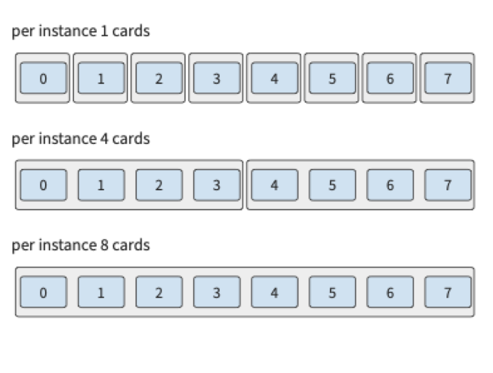
Using more cards is typically driven by three needs: model weights exceed a single card's memory, requiring distributed storage; a single request executes too slowly, requiring the computation to be split across multiple cards; or too many requests arrive at once, requiring more instances that can handle requests independently. These three needs correspond respectively to the goals of capacity, latency, and throughput.
6.1.2 Running Example: Capacity and Single-Step Time for Qwen3-235B-A22B¶
The running example for this chapter is: running Qwen3-235B-A22B on a single HGX H100 server, where the model has already processed the input, the cache holds 8192 context tokens, and generation is to continue. The HGX H100 is a common eight-card server: each of its eight H100 SXM cards has 80 GB of HBM with a peak bandwidth of 3350 GB/s, and a BF16 dense matrix multiplication peak of 989.4 TFLOP/s; the eight cards are interconnected via NVSwitch (the switch chip organizing the NVLink switching network) using fourth-generation NVLink, at 450 GB/s per direction per card; each card is additionally equipped with a 400 Gbit/s (50 GB/s) ConnectX-7 NIC for connecting to other servers.35
Multi-card design must first determine where data resides. The weights \(W_i\), KV state \(K_i\), activations \(A_i\), and remaining workspace \(U_i\) held simultaneously on card \(i\) must satisfy
Here \(C_i\) is the memory available to the task on that card. Weights are fixed by the model, KV grows with the session's context, and activations and workspace vary with the execution scheme. These four items share the physical memory of the card at any given moment.
Model scale of Qwen3-235B-A22B. The model stores weights and KV in BF16, with 94 layers and a hidden dimension of 4096; each layer has 64 query heads and 4 KV heads, with a head dimension of 128. The FFN consists of 128 routed experts, of which 8 are selected per token, and each expert has an intermediate dimension of 1536. GB and TB use decimal units, while MiB and GiB use binary units.
Start with capacity. The full-model BF16 weights total about 470.2 GB. Each context token requires storing K and V for every layer, so the model-wide KV per token is
The KV for 8192 tokens totals about 1.58 GB. Reserving 2 GiB, i.e., about 2.15 GB, for activations and remaining workspace, the total single-card requirement is about 473.9 GB — close to six times the capacity of a single H100.
To fit the model, these data must be split across eight cards: the weight matrices are split into eight parts by row or column, with each card holding one part; the workspace still keeps one copy per card. KV is split by attention head, but this model has only 4 KV heads: with eight cards, every two cards share one KV head, each keeping its own copy, so each card holds one quarter of the total KV. How this split preserves the correctness of the computation is covered in Section 6.2.2. The per-card memory requirement becomes:
| Placement | Weights | KV | Activations & workspace reservation | Total |
|---|---|---|---|---|
| Single card | 470.2 GB | 1.58 GB | 2.15 GB | 473.9 GB |
| Each of eight cards | 58.96 GB | 0.39 GB | 2.15 GB | 61.50 GB |
Each card needs about 61.50 GB, below the H100's 80 GB; the whole server totals about 492.0 GB, leaving about 148 GB out of 640 GB. Each card's weights are slightly more than one-eighth of 470.2 GB because normalization parameters and the router each have a copy on every card. The roughly 18.5 GB left on each card can hold more sessions: with this split, an 8192-token session occupies 0.39 GB per card, so the server can hold at most 47 such sessions simultaneously. Distributing storage lowers the per-card memory requirement; the total memory footprint of the instance is still the sum of the per-card footprints.1
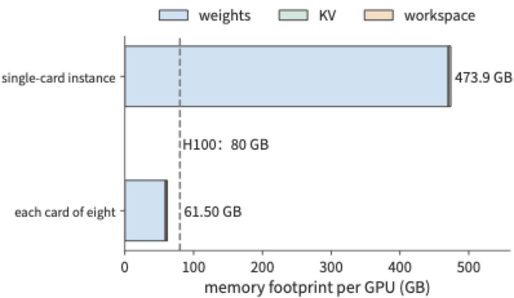
Next, consider execution time. Memory capacity determines whether the data can be held; access volume determines how much data must be read or written per execution. Take one layer's expert computation as an example: when generating one token, the router selects 8 experts, each with three matrices, and their combined weights total \(8\times3\times4096\times1536\times2=288\) MiB, all of which must be read once from HBM. At 3350 GB/s, this read takes about 90.1 μs; the matrix multiplication involves about 302 million FLOPs, which at 989.4 TFLOP/s takes only about 0.31 μs. The weight-read time exceeds the compute time by more than two orders of magnitude, so shortening this call's time first requires reducing the weight read per card. Generating one token across the whole model reads about 43.1 GB of weights and 1.58 GB of KV; if a single card reads all of it, this takes about 13.3 ms; split evenly across eight cards as above, each card reads about 5.79 GB, taking about 1.73 ms.
When an operator's computation and memory access overlap, its execution time can be estimated as
\(F\) is the computational complexity, \(P\) is matrix-multiplication performance, and \(V\) is HBM access volume in bytes. Computation and memory access proceed concurrently, and the execution time is determined by whichever takes longer. A subsequent operator must wait for the previous operator's output, so the times of sequentially executed segments must be added. Equation (6-2) is the Roofline model from Section 4.8.1. Using the definition in Section 1.2.2, the MFU of a single-token call cannot exceed \(0.31/90.1\), i.e., about 0.3%. This is the hardware-imposed ceiling at batch size 1, independent of implementation quality; the various parallelism strategies discussed in this chapter are all attempts to reorganize weight reading and reuse within this constraint. Section 6.2 will explain how to distribute this layer's weights and computation across multiple cards, and Section 6.4 will then compute the time required for cards to exchange results.
6.1.3 Different Requirements on Resources for Prefill, Decode, and Training¶
The 90.1 μs and 0.31 μs in Section 6.1.2 correspond to a single-token call. If more tokens are processed at once, the same set of weights can serve multiple input rows, and the ratio between compute time and read time also changes. When a call processes \(m\) tokens at once, an expert's computational complexity scales with \(m\), while the selected expert's weights can be reused across these tokens. Changing the example above from a single token to a prefill of 8192 tokens, all 128 experts get selected, and one layer's expert weight read volume grows to 4.5 GiB, taking about 1.44 ms at 3350 GB/s; the matrix computation grows to about 2.47 TFLOPs, taking about 2.50 ms at 989.4 TFLOP/s, exceeding the read time. At large batch sizes, one set of weights serves many input rows, and the primary constraint on execution time shifts from weight reading to matrix computation.
Communication also changes with shape. The BF16 hidden tensor is \(m\times4096\); a single token occupies 8 KiB, and 8192 tokens occupy 64 MiB. The two calls go through the same number of layers with the same number of exchanges, but the data volume transferred per exchange differs by a factor of 8192. Transfers of small data volumes are more sensitive to startup overhead, while transfers of large data volumes depend more on sustained bandwidth.
Decode also carries a temporal dependency: the current output token determines the next step's input. A single session must advance step by step; multiple sessions, however, can simultaneously supply inputs that are already ready. More sessions mean more opportunities for weight reuse, but also greater KV capacity and read volume, thereby simultaneously changing compute time, memory-access time, and queueing time.
Training also performs backpropagation after the forward pass, computing input gradients and weight gradients before using the gradients to update parameters; forward activations must be retained until the backward pass has used them. Multi-card training therefore must also synchronize gradients and retain more state. This chapter first introduces model splitting and the resulting data exchange; Chapter 10 discusses how these operations compose into a complete training step.
6.1.4 Overview of Parallelism Strategies: Which Dimension to Split¶
All three needs in Section 6.1.1 require distributing work across multiple cards, but the way of splitting differs in each case. The split depends on the data the model processes and on the model's own structure. A layer's input activation has three dimensions: the number of samples processed at once, \(B\) — for inference, this is the number of concurrently handled requests; the number of sequence positions per sample, \(S\); and the number of hidden features per position, \(H\). Chapter 5's matrix multiplication merged \(B\) and \(S\) into a row count \(M\), but attention must distinguish between different positions within the same sequence, so here the two are kept separate. The model itself has two further structures that can be split: layers \(L\), and, in MoE models, the set of experts \(E\) per layer. Figure 6-3 draws all five dimensions together and marks where each of the six common parallelism strategies makes its split.
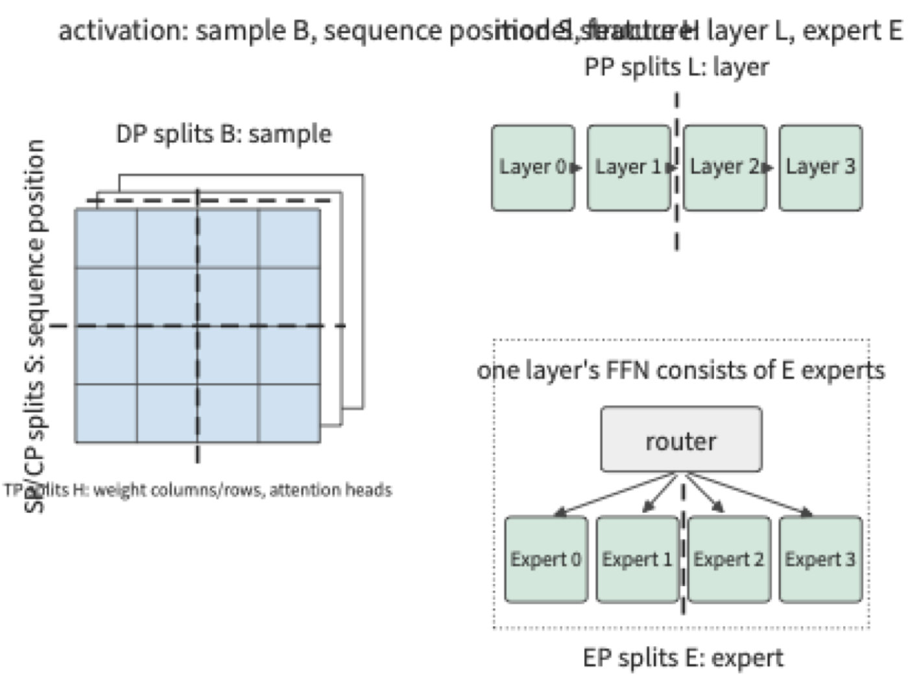
By the dimension split, the six parallelism strategies can be summarized in the table below. "Exchange" in the table refers to the data that must be transferred between cards; each subsection of Section 6.2 will compute its size in turn.
| Parallelism strategy | Dimension split | What each card stores and computes | What must be exchanged between cards |
|---|---|---|---|
| Data parallelism (DP) | Samples \(B\) | One complete copy of the model, different samples | No exchange during inference; during training, gradients from each card are aggregated |
| Tensor parallelism (TP) | Features \(H\): weight columns or rows, attention heads | Part of the matrix for the same layer | Output shards gathered as needed; partial sums must be added |
| Sequence parallelism (SP) | Sequence positions \(S\) for per-token operators | A segment of positions in the same sequence, for these operators | Gathered across all positions before entering the matrix multiplication; partial sums summed and then re-sharded by position |
| Context parallelism (CP) | Sequence positions \(S\) for attention | Q, K, V for a segment of positions in the same sequence | Remote K, V, or the statistics of each segment's attention |
| Pipeline parallelism (PP) | Layers \(L\) | A contiguous span of layers | Activations handed off between adjacent stages; during training, gradients are handed off in the reverse direction |
| Expert parallelism (EP) | Experts \(E\) | A subset of experts | Tokens are sent to the card holding the selected expert, and the results sent back |
Why six parallelism strategies: from bottlenecks to composition.
The table identifies the split locations; the next question is why one strategy cannot cover every case. A Russian-doll picture makes the composition intuitive. The outer layer manages samples or requests, so data parallelism (DP) determines how many independent pieces of work advance together. One piece then moves through the model layer by layer, and pipeline parallelism (PP) assigns contiguous layers to successive stages. Within a layer, expert parallelism (EP) distributes MoE computation by expert, tensor parallelism (TP) splits matrices by feature, and sequence and context parallelism (SP/CP) distribute activations and attention by sequence position. Each layer has its own dependencies, synchronization points, and communication boundary. In September 2026, Huawei chief semiconductor scientist Dr. Heng Liao proposed Nested BSP, which recursively repeats “parallel work, synchronization, exchange, and aggregation” at multiple levels; Figure 1 of the paper uses the same software nesting-doll picture.32
The nesting describes composition. DP can replicate a complete TP×PP×EP instance; SP commonly uses the same cards as a TP group; CP joins when long-context state or attention becomes the bottleneck; EP serves models with expert collections. The strategies split different coordinates of one execution space:
- DP handles many samples or requests and raises aggregate throughput;
- TP handles layer-internal matrices and a single large request by distributing computation, weights, and intermediate results;
- SP handles per-token operators inside a TP group and distributes activation storage and processing;
- CP handles long sequences by distributing context state and attention computation while exchanging remote context;
- PP handles layer count and model-weight size by organizing ordered computation as a pipeline;
- EP handles an MoE expert collection by distributing expert weights and token routing.
A strategy corresponds to a principal bottleneck. Sixteen cards, for example, can form DP2×PP2×TP4: two model replicas process different samples, each replica has two pipeline stages, and each stage uses four cards for layer-internal matrices. The four-card TP groups can also use SP without changing the card count. A good composition cuts each major bottleneck at the appropriate level and places the resulting communication on a suitable physical interconnect.
The table also shows two ways to organize results. Splitting samples, sequence positions, layers, or experts gives each card different data or layers, with results moving through gathers or stage handoffs. Splitting features gives each card one contribution to the same output, so later operators first add the partial sums. Section 5.2.4 distinguished output-dimension and reduction-dimension splits within one card; the same rule applies across cards, with the reduction now traversing the interconnect.
These strategies can appear in one deployment. Sequence parallelism usually shares a card group with tensor parallelism, expert parallelism can share a card group with data parallelism for the attention portion, and pipeline parallelism partitions the computation graph along its ordered dependencies. Section 6.3 assigns cards to such combinations.
Experiment 6-1 · Extension: how context length and input row count affect capacity and execution bottlenecks
(a) Find the single-request KV capacity for Qwen3-235B-A22B at 4096, 8192, and 16384 context tokens.
(b) Using this section's eight-card split with 2 GiB workspace reserved per card, find the maximum number of 32768-token sessions a single HGX H100 server can hold simultaneously; the exact weight value is given in the footnote.
(c) For 1, 64, and 8192 tokens, compute the matrix computation volume for one layer's expert computation and the weight-read time for the selected experts (for 64 tokens, estimate the number of selected experts using Equation (6-8) from Section 6.3.2), and using H100's parameters, determine whether execution time is primarily limited by compute or by memory access.
(d) Halve the HBM bandwidth and compare the increase in call latency across the three token counts above.
6.2 Six Parallelism Strategies¶
This section introduces the six parallelism strategies in turn, following the order of Figure 6-3. To make the division of labor clear, each subsection first illustrates with two cards before generalizing to more.
6.2.1 Data Parallelism: Replicate the Model, Split the Samples¶
Data parallelism (DP) has each card hold a complete copy of the model, each processing different samples. In Figure 6-4, the two cards process the first four and last four samples of the batch respectively, each producing its own portion of the output.
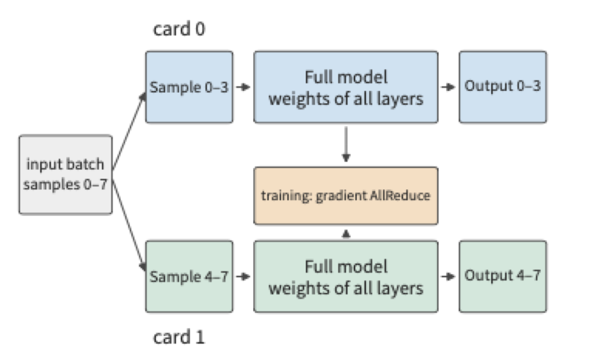
Data parallelism in inference is simply deploying multiple instances. When the model fits on a single card and there are multiple independent requests, the most direct approach is to assign different requests to different instances. Each instance holds its own weights and session state, and produces output independently. If a single card can process \(r\) requests per second, eight single-card instances, given a continuous supply of requests, can process \(8r\) requests per second in total.
Combining eight cards into a single instance, suppose the speedup for a single request is \(S(8)\); this instance can then process \(S(8)r\) requests per second. Both deployments use the same eight cards, and the ratio of throughputs is \(S(8)/8\): only if a single request is accelerated by exactly a factor of eight will the two throughputs be equal. As soon as there is communication or work that cannot be parallelized, the collaborative instance is trading part of the total throughput for a shorter single-request time.
Data parallelism for training also places the same set of parameters on multiple cards, but the gradients from all cards jointly determine the next update. For example, if two cards each process four samples and compute their own average gradients \(g_0,g_1\), the average gradient over all eight samples is \((g_0+g_1)/2\). Each card computes over half the samples, and the gradients are then aggregated to complete a single update. There is no such dependency between inference instances.
6.2.2 Tensor Parallelism: Splitting the Matrices Within a Layer¶
Multiple instances can handle more requests simultaneously, but this does not shorten a single request's execution time on a single card, nor does it help with sessions that a single card cannot hold. To let two cards jointly handle a single request, the computation and state within a single layer must be split. Tensor parallelism (TP) distributes the matrices within the same layer across multiple cards, each computing part of it before exchanging results. Figure 6-5 marks two split points within a layer.
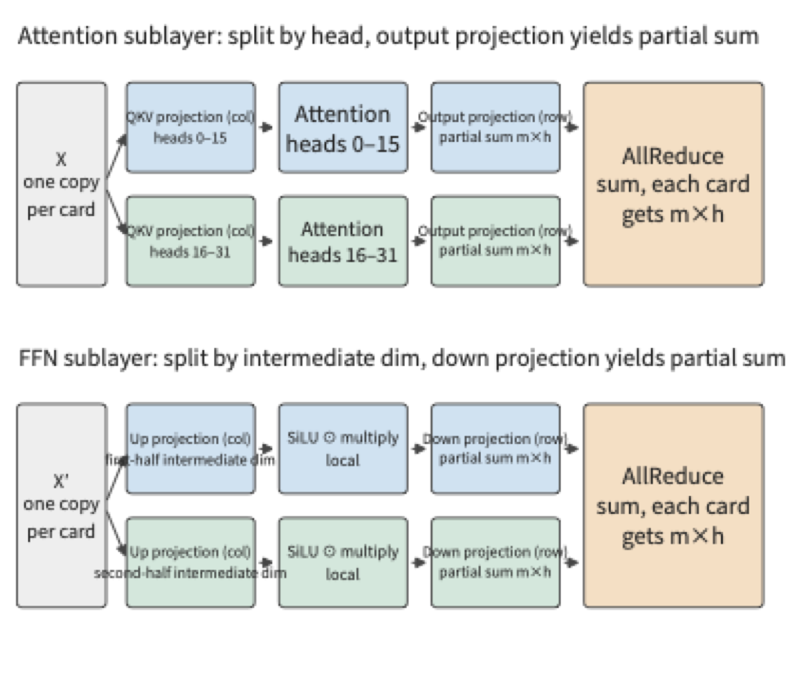
How long context forces a dense model across cards. The dense Qwen3-32B has BF16 weights totaling about 65.52 GB, which a single 80 GB H100 can hold. The model natively supports a 32K-token context, extendable to 128K via YaRN, which extrapolates the positional encoding fourfold.36 Each token's KV is \(2\times64\times8\times128\times2=256\) KiB, so a single 128K session requires storing about 34.36 GB. In a single-card deployment, weights, one 128K session's KV, and a 2 GiB workspace together total about 102.03 GB, exceeding 80 GB; split across two cards, each holds about 52.09 GB, enough for two such sessions; across four cards, each holds about 27.12 GB, enough for seven; across eight cards, sixteen. Here, tensor parallelism is adopted primarily for capacity: TP1 (the number after TP denotes the tensor-parallel card count; TP1 is a single card) cannot even hold a single 128K session.
But some models adopt newer attention mechanisms that reduce KV storage requirements under long context. KV capacity is determined by attention design: the number of layers, KV heads, head dimension, and whether every layer stores KV. The table below compares three models of similar scale: the dense Qwen3-32B; the MoE model Qwen3-30B-A3B from the same generation, still using ordinary GQA, with 48 layers, 4 KV heads, and head dimension 128; and the MoE model Qwen3.6-35B-A3B, which uses hybrid attention — of its 40 layers, only 10 are full attention, each with 2 KV heads and head dimension 256, while the remaining 30 layers use linear attention, storing only a fixed-size recurrent state.
| Item | Qwen3-32B | Qwen3-30B-A3B | Qwen3.6-35B-A3B |
|---|---|---|---|
| Resident BF16 weights | 65.52 GB | 61.06 GB | 69.32 GB |
| KV per token | 256 KiB | 96 KiB | 20 KiB (10 full-attention layers only) |
| Fixed state per request | — | — | 62.9 MB recurrent state (FP32) + 2.0 MB convolution state |
| State for one 128K request | 34.36 GB | 12.88 GB | 2.75 GB |
| Weight read per step (batch 1, 32K context) | 63.97 GB | 6.08 GB | 5.89 GB |
| Weight read per step (batch 64, 32K context) | 63.97 GB | 60.44 GB | 68.30 GB |
| Matrix computation per step (batch 64, 32K context) | 8.49 TFLOPs | 2.04 TFLOPs | 0.73 TFLOPs |
| State read per step (batch 64, 32K context) | 549.8 GB | 206.2 GB | 47.1 GB |
| 128K/32K requests one H100 can hold | 0/1 | 1/5 | 3/11 |
| 128K/32K requests two H100s can hold | 2/10 | 7/29 | 31/117 |
This table illustrates three points. First, at batch size 1, the two MoE models each read only about one-tenth of the weights per step; at batch size 64, the experts selected across 64 tokens cover nearly all experts, so weight reads return to 60–68 GB, comparable to the dense model's 64 GB. Second, the matrix computation volume is consistently only 1/12 to 1/4 that of the dense model — an advantage MoE retains throughout. Third, with long context and large batch, state reads become the dominant part of each step: at 3350 GB/s, with batch 64 and 32K context, reading state takes about 164, 62, and 14 ms for the three models respectively, while reading weights takes only 18–20 ms. This gap comes from the attention design, not from MoE: Qwen3-30B-A3B is also MoE, yet it still stores 96 KiB of KV per token.
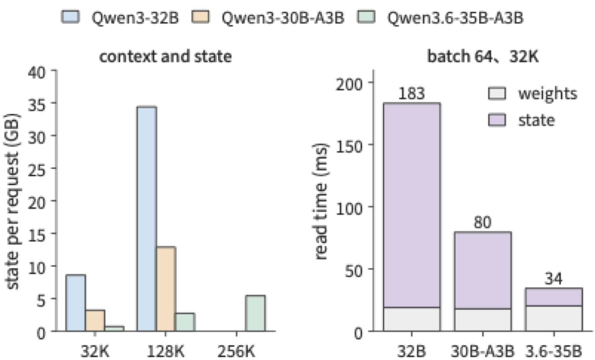
Capacity varies accordingly. With 2 GiB workspace reserved per card, a single H100 can hold 0, 1, and 3 128K requests respectively; two H100s hold 2, 7, and 31. Qwen3.6-35B-A3B natively supports 262,144 tokens, and such a request's state is only about 5.43 GB. So whether a 30B-class service needs multi-card TP at 128K context depends mainly on attention design, not on whether the model is dense or MoE. DeepSeek V4-Flash and similar models further compress KV; Section 2.6.1 compared the state and computation of five models at 8K, 200K, and 1M context, and this will not be expanded on further here.37
Return to the two split points marked in Figure 6-5 within a layer: the final step at both points yields only a partial sum, requiring an AllReduce to add the partial sums across cards and give every card the total. Qwen3-32B does this twice per layer, 128 times across 64 layers — a count used repeatedly later when computing execution time. To understand why one kind of split requires only concatenation while the other requires summation, consider a minimal matrix multiplication. When two cards jointly complete it, first decide what each computes: the two cards can compute different elements of the output, or each can compute part of the same output. The former result needs concatenation, the latter needs summation.
The example below illustrates both kinds of split in full. The input is \(x=[2,3]\), the weight matrix is \(W=\begin{bmatrix}1&4\\2&5\end{bmatrix}\), and the output is \(xW=[8,23]\). Splitting by the weight matrix's columns — that is, distributing output features across cards — card 0 holds the first column and produces the output's first element, 8; card 1 holds the second column and produces the second element, 23. Concatenating the two elements side by side gives the complete output.
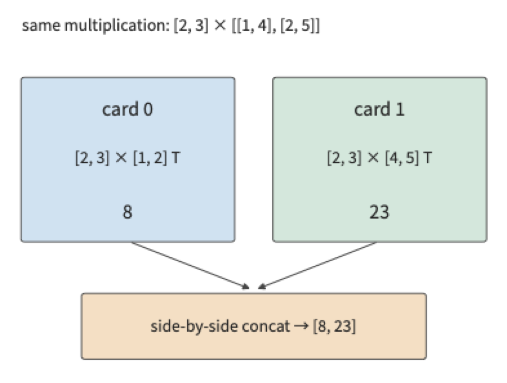
Splitting instead by the weight matrix's rows — that is, distributing the same token's input features across cards — card 0 multiplies input 2 by the first row, giving \([2,8]\); card 1 multiplies input 3 by the second row, giving \([6,15]\). Each card obtains a two-element vector, but each vector contains the contribution of only one row of weights; only after adding corresponding positions do we get the complete output \([8,23]\).
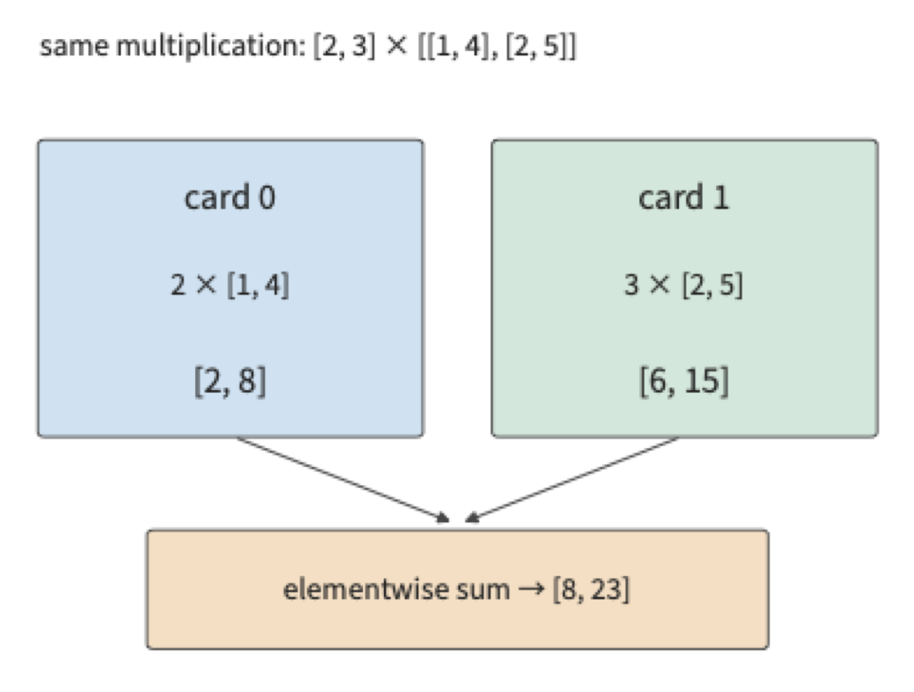
Both kinds of split can be joined end to end in the FFN, as in the lower half of Figure 6-5. Here we adopt the SwiGLU described in Chapter 2: the input is fed into a gate projection and an up projection, the gate result passes through the SiLU activation function, is multiplied elementwise with the other branch, and finally passes through the down projection. Suppose this call processes \(m\) tokens at once, with hidden width \(h\) and intermediate width \(f\). The input is \(X\in\mathbb{R}^{m\times h}\), the up projections are \(W_g,W_u\in\mathbb{R}^{h\times f}\), and the down projection is \(W_d\in\mathbb{R}^{f\times h}\):
Split the intermediate width \(f\) into two halves. Card 0 holds the left half of the columns of both up-projection matrices and the top half of the rows of the down-projection matrix; card 1 holds the right half of the columns of both up-projection matrices and the bottom half of the rows of the down-projection matrix. Both cards hold the complete input \(X\) and each produces its own intermediate activation \(Z_0,Z_1\). SiLU and the elementwise multiplication execute per-element, so each card can process its own half directly.
The down projection joins along the same intermediate dimension:
Both products on the right have shape \(m\times h\), each containing only the contribution of half of the intermediate dimension's components; only after adding them do we get the input for the next layer.
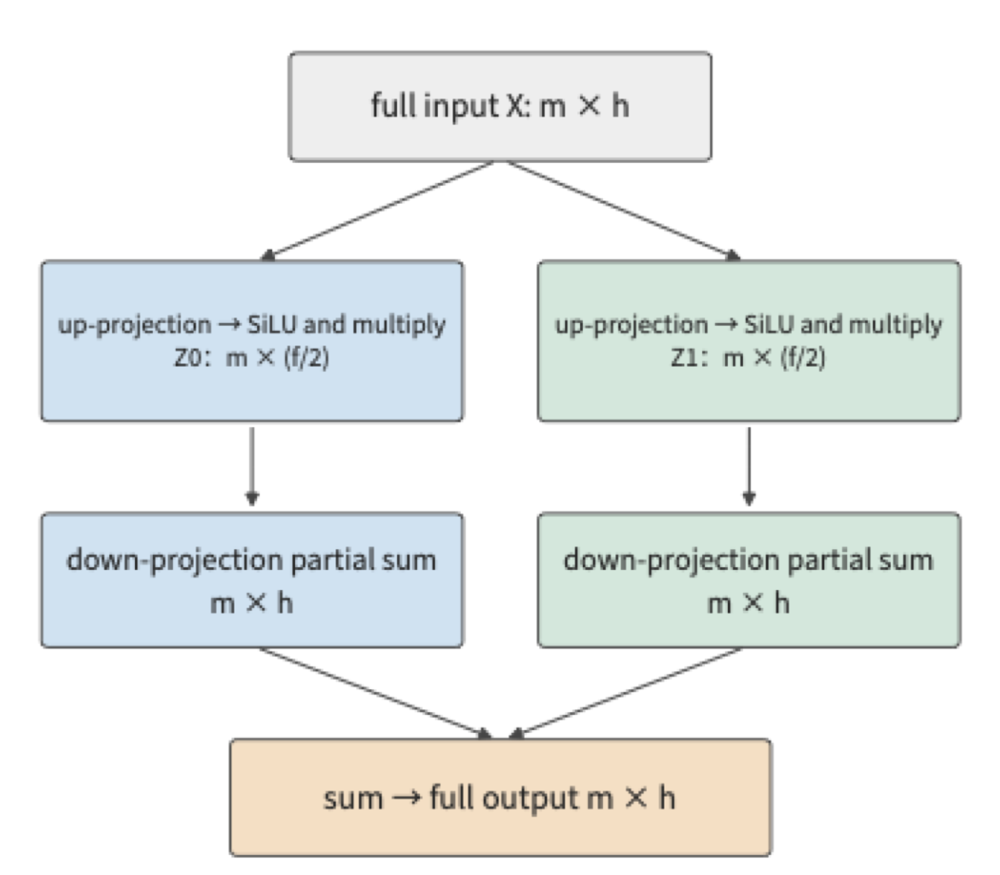
If both cards need the complete result, an AllReduce is performed. If the next operator can continue working with a shard, a ReduceScatter is performed instead: sum first, then leave different segments of the summed result on different cards. To recover complete data from shards, an AllGather is performed, concatenating the segments held by each card.
Example: how much weight-read reduction and how much added communication does a four-way split give? Take Qwen3-32B's \(h=5120,f=25600\), evenly splitting the intermediate dimension across four cards.
Solution: Each card's up projection is \(5120\times6400\) and down projection is \(6400\times5120\). The three matrices together occupy 187.5 MiB, one quarter of the original 750 MiB. At 3350 GB/s, the single-token read time drops from about 234.8 μs to 58.7 μs, saving about 176.1 μs per card by reading 562.5 MiB less. The cost is that the four cards' respective 10 KiB output partial sums must be added together. Section 6.4 will use a concrete algorithm to derive the time for this aggregation.
Attention can also be split by head: the Q, K, V projections produce only the heads assigned to this card, and each card independently computes attention for these heads; the output projection maps the results of each head back to the hidden dimension, and each card still obtains only a partial sum, which must be added to recover the complete output. Hence Qwen3-32B performs one reduction each for the attention output and the FFN output per layer, 128 times across 64 layers. The word embedding is split by vocabulary, and the vocabulary output projection is likewise split across cards.
Heads cannot be split further; they are the minimum unit of allocation. Qwen3-32B has 8 KV heads, so with TP8 each card gets one; with TP16, the query heads sharing the same KV head are split across two cards, and both must store that KV head's state. At a context of 128K, each KV head's state occupies 4 GiB, totaling 32 GiB across eight cards and 64 GiB across sixteen. Qwen3-235B-A22B has only 4 KV heads, and the eight-card split in Section 6.1.2 already has each KV head stored once on each of two cards. Once the TP card count exceeds the KV head count, further increases only replicate KV.
This chapter uses "instance count" to denote the number of independent inference services, and \(p\) to denote the TP card count of a single instance. With eight cards total, the instance count is \(8/p\). The following sections first derive the time \(T(p)\) for a single instance to generate one token, then convert this into the completion time for a batch of requests.
Deriving the time for a complete decode step from single-layer computation. Take a 128K session of Qwen3-32B as an example. Each projection's weights are read from HBM once per step, the old KV is read once, and a new token is written. The BF16 weights of the attention projections are
Here the two \(5120\times8192\) terms correspond to the Q and output projections, and the two \(5120\times1024\) terms to the K and V projections. Each layer adds another 750 MiB of FFN weights, for a total of 930 MiB. With a context of 131,064 tokens, the KV read per layer is about 512 MiB. The vocabulary has 151936 entries, so the output projection weights total about 1.56 GB. The total HBM access volume for a full step can therefore be written as
\(s\) is the context length before this step begins. Substituting 131,064 gives about 98.32 GB, of which 63.97 GB is weights and 34.36 GB is KV. Reading this at H100's 3350 GB/s takes about 29.35 ms; the matrix operations for the same step come to about 0.34 TFLOPs, which at 989.4 TFLOP/s takes only about 0.34 ms, so both the attention and FFN execution time in each layer are memory-bandwidth bound. With \(p\)-way TP (\(p\le8\)), weights and KV are evenly split across cards, and this portion of time becomes \(29.35/p\) ms. Normalization, elementwise operations, and sampling only read and write a handful of hidden vectors, and are not counted here.25 Computation and reduction execute in sequence, giving the execution time model used in later sections:
Here \(T_{\mathrm{AR}}(p)\) is the time for \(p\) cards to perform one AllReduce. Equation (6-5) splits the impact of increasing TP card count into two terms: local execution time falls as card count grows, while communication time depends on the algorithm and connection method. Doubling the card count from \(p\) to \(2p\) saves \(T_{\mathrm{local}}/(2p)\) in local time. So the condition under which adding cards shortens execution time is
The larger \(p\) is, the smaller the right side becomes. Even if each reduction only adds the same small increment of time, the accumulated cost will eventually offset the reduction in local execution time.
With more cards, a linear layer can also split two matrix dimensions at once, arranging the cards into row and column communication groups. Take the projection \([8192,4096]\times[4096,12288]\) as an example: split the output into 16 shards placed on 16 cards, and each card initially holds only a 4 MiB input shard and a 6 MiB weight shard. Arranged as a 4×4 grid, each card must gather the input shards of the other three cards in its row, sending 12 MiB, and gather the weight shards of the other three cards in its column, sending 18 MiB. Switching to a 2×8 grid gives 28 MiB and 6 MiB in the two directions respectively; switching to 8×2 gives 4 MiB and 42 MiB. When the links in both directions are independent and equally fast, the transfer time is determined by the larger of the two, so 4×4 is fastest. MeshSlice continues tiling along this layout, pipelining the gathering and matrix multiplication; the inference system Arctic instead switches its division of labor across different execution stages, and its state migration is discussed in Chapter 9.4
6.2.3 Sequence Parallelism: Sharding Per-Token Operators Along the Sequence¶
Tensor parallelism has each card hold only part of the matrix, but within a layer there are also operators that do not perform matrix multiplication, such as LayerNorm, Dropout, and residual addition. These operators work per token: each token's result depends only on its own hidden vector. Sequence parallelism (SP) shards these operators along sequence position: each card in a TP group handles only a segment of positions, and no longer keeps a full copy of the activations. This book follows the common definition used by Megatron, the large-model training framework.31
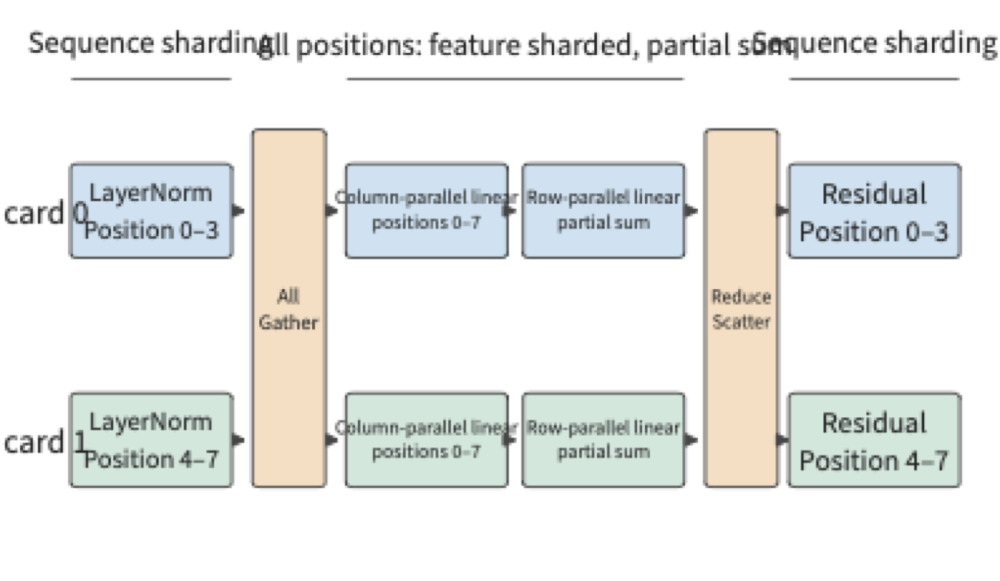
The column-parallel linear layer needs the complete input row, so before entering it, AllGather collects each card's sequence shard; after the row-parallel linear layer produces partial sums, ReduceScatter both sums and re-shards by position in one step. AllReduce is equivalent to ReduceScatter followed by AllGather; sequence parallelism simply places these two halves at different operator boundaries, so the per-token operators in between no longer need each card to hold a full copy of the activations.
For example, a \([8192,4096]\) BF16 activation is 64 MiB; if four cards each keep a contiguous \([2048,4096]\) shard, each card holds only 16 MiB, totaling 64 MiB, whereas if all four cards stored the full tensor the total would be 256 MiB. This saving occurs only within the interval where sequence sharding is maintained — not all activations and weights in the model shrink by a factor of four. The relationship between the reduction dimension and the output dimension remains the same as in Figure 6-9; what changes is only which layout the next operator receives. The accompanying experiment demonstrates both the sharding-preserved and re-gathering FFN paths in JAX (a numerical computation framework supporting automatic differentiation and compiled execution).3
6.2.4 Context Parallelism: Splitting Attention Within the Same Sequence¶
Sequence parallelism only handles per-token operators, but attention requires each position to see other positions in the sequence. Context parallelism (CP) distributes the positions of the same long sequence across multiple cards; each card holds the Q, K, V for its own segment of positions and computes the attention output for that segment. Figure 6-11 illustrates the division of labor between two cards using eight positions.
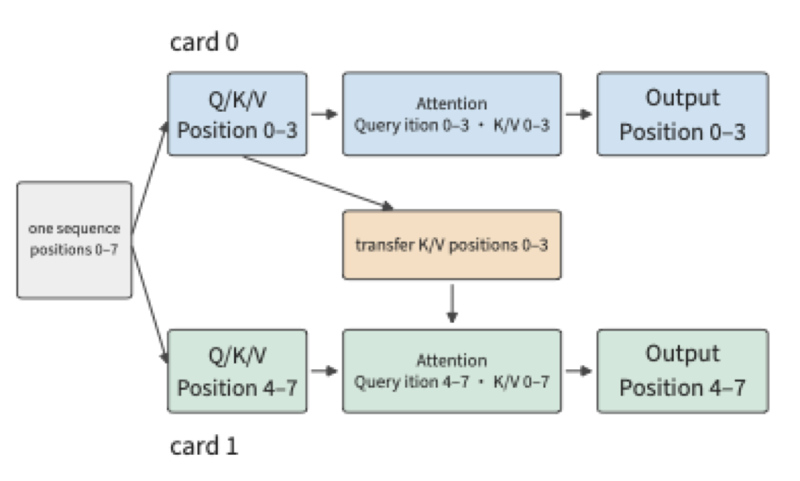
The queries on a given card still need the remote K, V within the range permitted by the mask. This can be done by gathering all K, V at once, or by circulating K, V blocks in a ring across cards, accumulating maxima, exponential sums, and weighted outputs using the online softmax from Section 5.3.3 as each block arrives. Ring Attention is one scheduling and transmission implementation; context parallelism is the work-partitioning method — the two are not synonyms.31
Figure 6-12 depicts this dependency as the visibility relationship among eight positions.
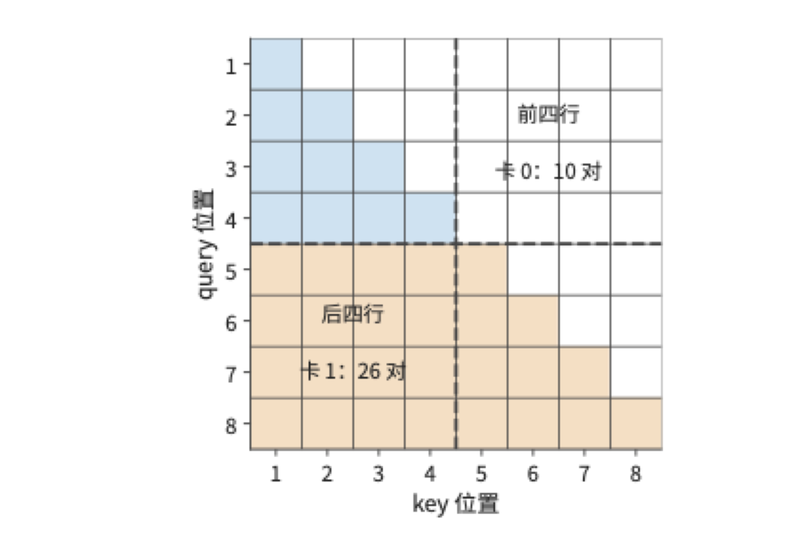
Splitting contiguously in half by position also creates computational imbalance. The causal attention over eight positions has a total of \(1+\cdots+8=36\) query-key pairs; the first four positions have only 10 pairs while the last four have 26, so although the two cards have the same number of tokens, their workloads differ by a factor of 2.6. Pairing up earlier and later positions — for example, giving card 0 positions \(1,2,7,8\) and card 1 positions \(3,4,5,6\) — makes each card responsible for 18 pairs. Real implementations often use a chunked, zigzag layout, but the original positions and causal mask must be preserved, and communication must be rearranged accordingly; remote context cannot be discarded as padding.
During decode, the new token's query is very short but the historical K, V is very long. After splitting along historical positions, each card first computes the local maximum \(m_r\), exponential sum \(l_r\), and unnormalized weighted vector \(u_r\) for its own segment, then these are merged as
\(o\) is exactly the new token's attention output over all historical positions. This is the same as the tile-merging softmax approach in Chapter 5, except that the statistics and vectors must be transferred across cards. Each card cannot independently complete softmax and then simply average the outputs. Context parallelism reduces the context state each card holds and the local attention computation, at the cost of exchanging K, V or reducing statistics; the dependency between preceding and following tokens during generation does not thereby disappear. The names for sequence parallelism and context parallelism overlap across different frameworks; when evaluating a given configuration, look at which operators, which tensors, and which communication group are being split, not just the abbreviation.
6.2.5 Pipeline Parallelism: Partitioning Stages by Layer¶
The methods above all divide labor within a single layer. Pipeline parallelism (PP) instead divides labor by layer: the model's layers are split in order into several stages, each handled by one card or a group of cards. Figure 6-13 splits Qwen3-32B's 64 layers into two stages.
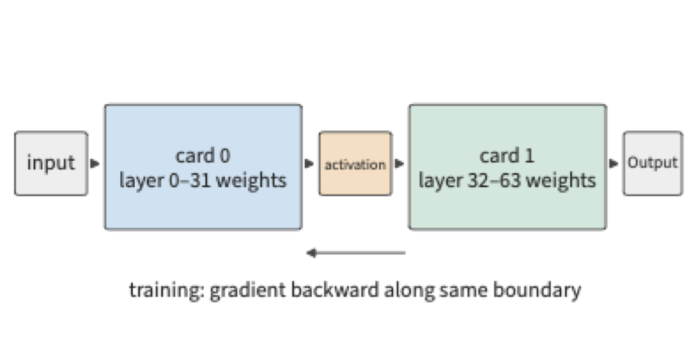
Once one stage finishes computing its own layers, it hands off the activations to the next stage to continue. Each stage only holds the weights for its own layers, and only intermediate results are passed between stages.
The inputs fed into the pipeline are organized as micro-batches: a batch is split into multiple micro-batches, so different stages can process different micro-batches at the same time. Suppose the model is split into \(q\) stages, each stage's execution time (including handing off activations) is \(t\), and the input consists of \(b\) micro-batches that are already ready and mutually independent. Consider the case of four stages, each taking 1 ms. Micro-batch 0 enters stage 0 at 0 ms, passes through all four stages, and finishes at 4 ms; stage 0 can accept micro-batch 1 at 1 ms, which finishes at 5 ms. The remaining micro-batches follow in sequence, each finishing 1 ms after the previous one.
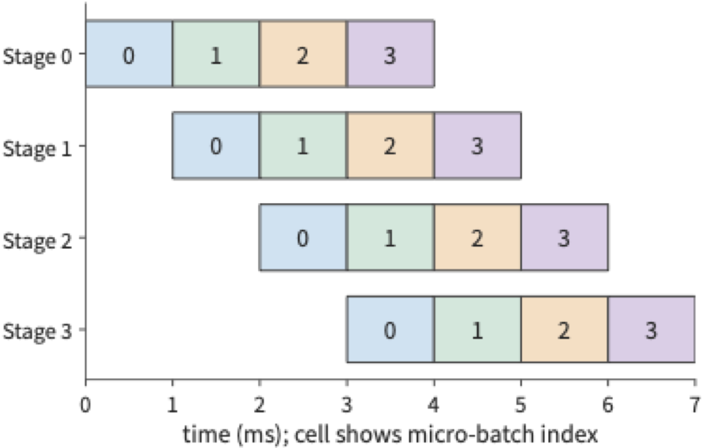
The first micro-batch takes \(qt\), and every additional micro-batch after that adds only \(t\), so
The numerator is the total time all stages actually spend working; the denominator is the number of stages multiplied by the time needed to process all micro-batches. With four stages and four micro-batches, utilization is \(4/7\), about 57%; increasing to 16 micro-batches gives \(16/19\), about 84%. The more independent micro-batches there are, the smaller the fraction of idle time caused by pipeline filling and draining.
Uneven execution times across stages also leave cards idle. If the four stages need 1, 1, 2, and 1 ms respectively, the first micro-batch finishes at 5 ms, and thereafter one finishes at best every 2 ms. Input arrives at the 2 ms stage faster than it can process it, so the queue gradually backs up; once the buffer fills, upstream stages must pause. Partitioning stages according to each layer's actual execution time can make stage durations closer together and reduce this buildup.5
The next input for an autoregressive conversation is only ready once the current token has been generated. Four independent conversations can supply four micro-batches, whereas the future four tokens of the same conversation form a sequential dependency chain. Pipeline utilization therefore depends directly on how many micro-batches can start execution at the same time.
6.2.6 Expert Parallelism: Splitting the Expert Set¶
The last method splits the expert set unique to MoE. In a dense model, every token uses the same set of FFN weights; an MoE model prepares multiple feedforward networks as experts, and a router computes selection scores to pick which experts to run for each token. Each token uses only the experts selected for it, but the entire expert set must still be held on the accelerators, ready for future tokens to select from. MoE thus introduces a new division of labor: expert parallelism (EP) places different experts on different cards, and each card processes the input routed to it. Figure 6-15 splits eight experts across two cards.
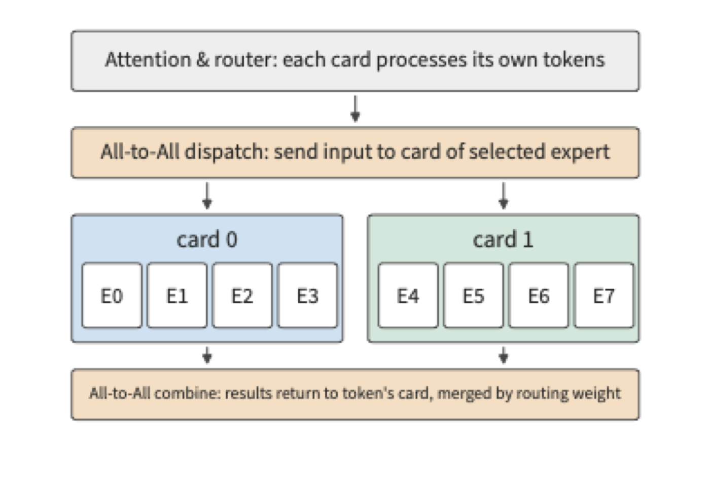
Expert parallelism must first resolve where expert weights are placed, and only then how the current token gets executed.
Let's illustrate this division of labor with four cards and eight experts. Card 0 holds experts 0 and 1, card 1 holds experts 2 and 3, and so on. Card 0 currently holds token A, and the router selects experts 1 and 6 for A: expert 1 is on the local card, expert 6 is on card 3. Card 0 must both run its local expert 1 and send A's input to card 3, then collect both outputs and merge them according to the routing weights.
The process of sending expert inputs to the cards holding those experts is called dispatch; the process of sending outputs back to the originating card and merging them is called combine. Continuing with token A: if the two experts' outputs are \(y_1,y_6\) and the routing weights are \(a_1,a_6\), the complete MoE output is \(a_1y_1+a_6y_6\). The sending card holds the token's identifier and routing information, the receiving card runs the expert, and the returned result is then attributed back to the same token.
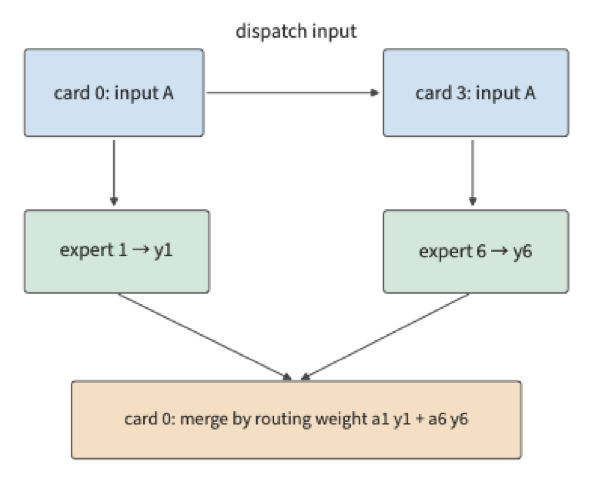
When multiple experts reside on the same card, only one copy of the input needs to be sent. If a token's eight selected experts are distributed two-by-two across four remote cards, a 4096-dimensional BF16 input is 8 KiB: sending per expert would require 64 KiB, but sending per destination card requires only 32 KiB, since the two experts on the same card share this single input copy.
When multiple tokens are processed together, each card must send differing amounts of data to different cards — this is the All-to-All shown in Figure 6-15. The receiving side first rearranges the received input rows by expert, performs the matrix multiplication, and then reorders the outputs back to the original token sequence. The card that receives the most input generally also performs the most expert computation.
Qwen3-235B-A22B scales up this example to 128 routed experts per layer, selecting 8 per token, across 94 layers. Each expert contains three projections, with hidden dimension 4096 and intermediate dimension 1536, giving BF16 weights of \(3\times4096\times1536\times2=36\) MiB. A single layer's full set of experts occupies 4.5 GiB, and across 94 layers this totals about 423 GB. Splitting experts evenly across eight cards gives about 52.9 GiB per card; each card must also hold the weights, KV, and workspace for attention layers, the router, and the input/output layers. The expert set can be distributed across cards, while the attention heads and state follow attention's own division of labor.
Exercise 6-2 · Core: How Tensor Splitting and Micro-Batch Pipelining Change Execution Time
(a) Write out the shapes of the six weight shards and the two output partial sums for two-card SwiGLU, and use Equation (6-3) to explain why the partial sums from both cards must be added together.
(b) For TP1, TP2, TP4, and TP8, compute the local memory access time for a 128K-context session of Qwen3-32B, excluding communication overhead for now; find the time saved each time the card count doubles.
(c) Using the reduction times from Section 6.4, substitute them into Equation (6-5) and recompute the speedup; explain where the gap comes from.
(d) Draw the timeline for a four-stage pipeline processing eight micro-batches, considering both the case where all four stages take 1 ms and the case where the durations are 1, 1, 2, 1 ms in sequence; compare the completion times in the two cases, and identify before which stage micro-batches will back up.
(e) Advanced: for the same FFN, compare the data that must be passed between adjacent operators under the two approaches of outputting the full tensor versus keeping output shards; optionally, adopt the accompanying two-dimensional grid scheme and further derive how the communicated data is tiled.
6.3 Combined Parallelism and Model Scale¶
The six methods are rarely used alone. This section first explains how to combine these methods and assign coordinates to each card, then discusses two issues specific to MoE: how a batch's expert selection changes weight reads and per-card load, and how the combination changes as the model continues to grow.
6.3.1 Combination Schemes and Device Coordinates¶
Tensor parallelism and pipeline parallelism can be combined: for example, split eight cards into four pipeline stages, with two cards within each stage doing tensor parallelism. The two-card reduction for each layer is completed within the stage, and activations are passed between adjacent stages. If each of the two cards within a stage holds the complete 8 KiB hidden vector and hands it separately to the corresponding card in the next stage, the two stages together send 16 KiB in total; if what is passed between stages is instead a shard, the next stage reassembles it as needed for computation. So when combining the two, it's necessary to specify clearly which shards each stage outputs and which shards each card in the next stage receives.
When combining multiple methods, first assign coordinates to each card, then write out, for each operator, its input, weight, and output shards, along with the card group requiring communication. For example, a scheme with data parallelism 2, pipeline parallelism 2, and tensor parallelism 4 is written DP2×PP2×TP4, occupying \(2\times2\times4=16\) cards; if sequence parallelism is enabled within the same TP4 group, the card count doesn't change, and we don't additionally multiply by an SP4 factor. Splitting determines who owns each piece of work; scheduling determines the order of readiness, execution, communication, and reclamation — together, the two make up a complete parallelism scheme.
Expert parallelism can also be combined with tensor parallelism within an expert. For example, four expert groups each own 32 experts, and each group further splits the expert's intermediate dimension across two cards, with each card handling 768 dimensions. The whole instance still spans eight cards, and each card is identified by two coordinates: the expert-group number specifies which experts the card is responsible for, and the intra-group tensor-parallel number specifies which half of those expert matrices the card handles. The following discussion derives communication along this TP2×EP4 layout.
The source of expert inputs is as follows: have all four expert groups run attention for the same request, each keeping its own copy of that request's KV; once attention finishes, each group already holds the complete expert input, and can directly pick out the rows needed by its own experts without cross-group dispatch of inputs; the results from each group are finally combined via reduction.
| Expert group | Cards | Expert IDs | Per-card expert intermediate dim | Per-card KV heads |
|---|---|---|---|---|
| 0 | 0, 1 | 0–31 | 768 | Even card 0, 1; odd card 2, 3 |
| 1 | 2, 3 | 32–63 | 768 | Same as above |
| 2 | 4, 5 | 64–95 | 768 | Same as above |
| 3 | 6, 7 | 96–127 | 768 | Same as above |
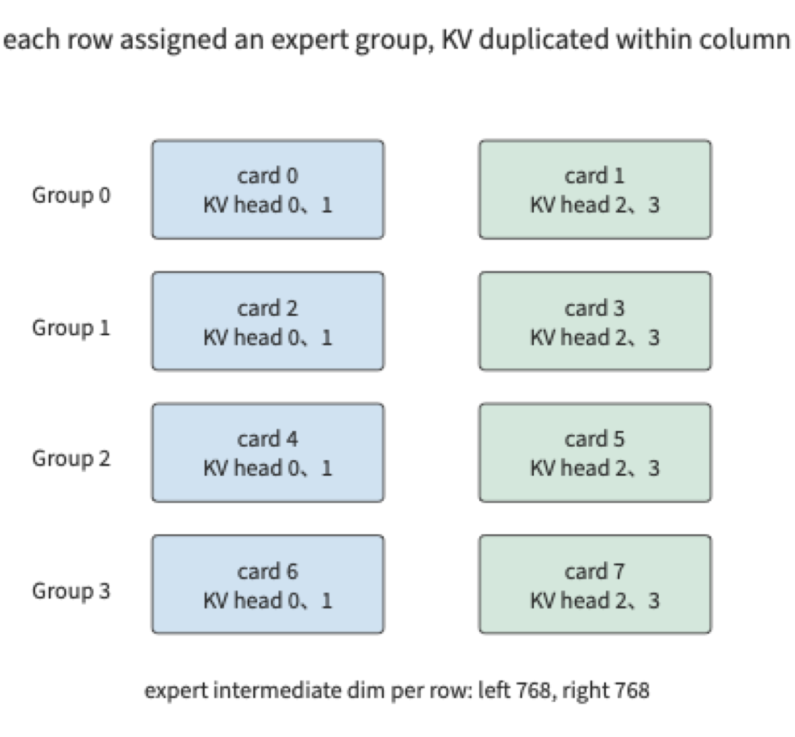
Once data placement is settled, next trace how the outputs are combined. The two cards within a group each compute half of the expert's intermediate dimension, first summed within the group to get that group's full contribution; then the contributions of the four groups are summed together.
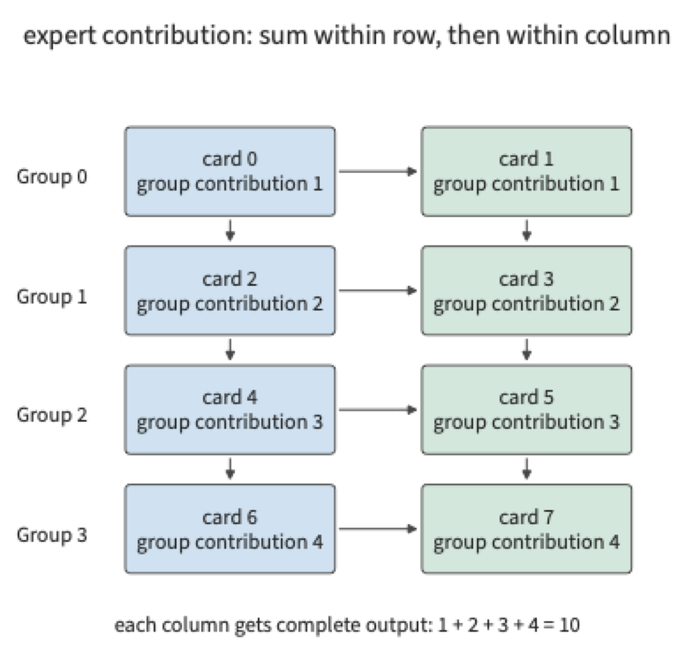
The second summation step happens between cards with the same index. For example, if the four groups' contributions to a given output element are 1, 2, 3, and 4, the four even-numbered cards reduce together to get 10, and the four odd-numbered cards reduce separately to get 10 as well. At this point every card holds the same complete output and can proceed to the next layer.
Avoiding dispatch comes at the cost of extra storage and computation. Under this layout, each card's weights come to about 64.8 GB, totaling 518.6 GB across eight cards — about 48.4 GB more than the 470.2 GB required if each parameter were stored only once. With a context of 8192 tokens, per-card KV is 752 MiB, totaling 5.875 GiB across eight cards, four times the actual KV for that request. Each group runs attention redundantly, in exchange for having the expert input already local.6
Worked example: how much reduction communication does the layout of replicated attention and split experts require? The reduction uses FP32, so a single token's complete hidden vector is \(4096\times4=16\) KiB. Using the ring algorithm from Section 6.4.2 for a reduction between two cards, each card sends the size of one full vector; reducing across four cards sends 1.5 times that. Each layer involves three merging steps — the within-group reduction for attention, the within-group reduction for experts, and the reduction across the four expert groups — so each card sends
Across eight cards this totals 448 KiB; for a prefill of 8192 tokens using the same division of labor, each card sends 448 MiB.
6.3.2 Within-Batch Reuse and Load Imbalance¶
The previous subsection settled which cards the experts sit on, but not which cards are busiest at any given step — that depends on which experts the current batch selects. A single token selects only eight experts, but a batch might cover the entire expert set. Suppose 64 tokens each select eight experts, giving 512 token-to-expert assignments in total.
If these assignments happen to cover the 128 experts evenly, each expert processes four tokens' feature vectors; if all tokens select the same eight experts, each expert processes 64 tokens' feature vectors. The effective matrix computation is the same in both cases. Assuming that within a batch, each selected expert's weights are read from HBM only once, the former requires \(128\times36\) MiB, i.e., 4.5 GiB; the latter requires \(8\times36\) MiB, i.e., 288 MiB — a 16-fold difference in read volume.
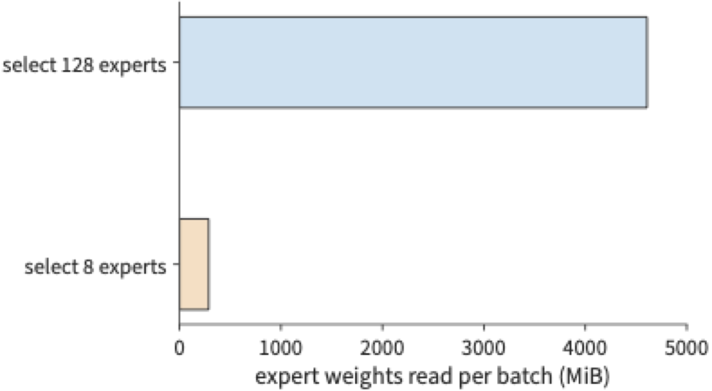
The fewer active experts there are, the more input rows can reuse each expert's weights, both reducing repeated reads and enlarging the row count in the matrix multiplication. But which card executes these rows also affects completion time. In the TP2×EP4 layout, uniform coverage gives each group \(32\times4=128\) assignments; if the eight active experts all fall within a single expert group, that group must handle all 512 assignments — four times the computation of the uniform case — while the other three groups can only wait.
So analyzing execution time requires computing both the whole batch's weight-read volume and the computation of the most heavily loaded expert group. Decode's small matrix operations are easily limited by weight-read speed, while prefill's large matrix operations are more easily limited by the computation time of the most heavily loaded expert group. Spreading hotspot experts across different EP groups preserves within-batch reuse while easing the computational burden on any single expert group.

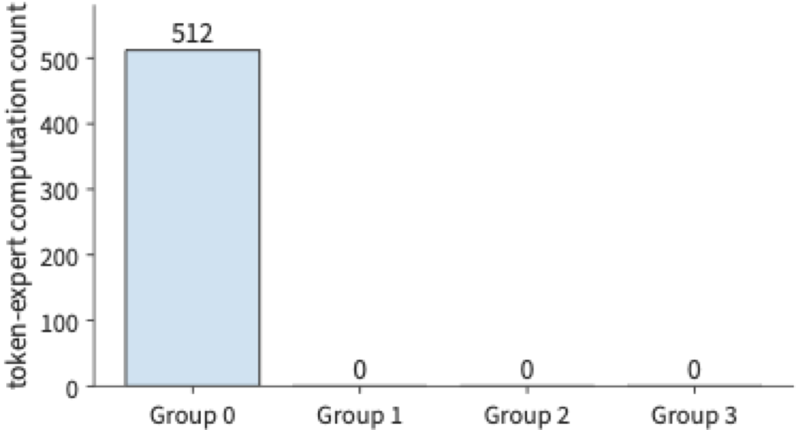
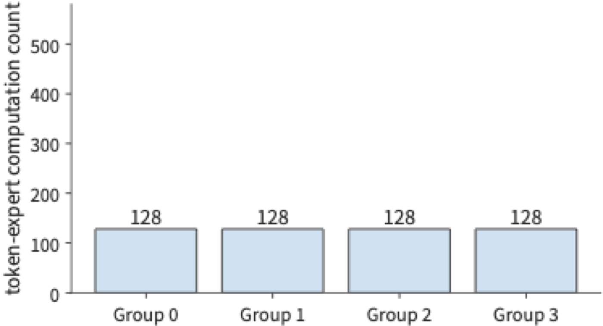
The last two layouts in the figures read the same amount of weights, yet their completion times can differ, because a different number of cards participate in the computation. So within-batch reuse must be analyzed together with how experts are distributed across cards.
Besides the uniform-coverage and concentrated-selection cases above, we can also compute the average outcome under uniformly random expert selection. Suppose each token selects \(k\) out of \(E\) experts, with tokens chosen independently. The probability that a given expert is skipped by a single token is \(1-k/E\), and the probability it is skipped by an entire batch of \(m\) tokens is \((1-k/E)^m\). For each expert, define an indicator variable that equals 1 if the expert is selected somewhere in the batch and 0 otherwise. Summing these variables and taking the expectation gives the expected number of active experts within the batch:
Taking \(E=128,k=8,m=8\) gives about 52 active experts in expectation, with an ideal read volume of about 1.8 GiB; if all eight tokens choose the same eight experts, the read volume remains just 288 MiB. As the batch grows larger, the number of selected experts gradually approaches the total expert count, and further increases in the number of input rows mainly improve the reuse of each set of weights.7
The actual routing outcome is determined jointly by the input and the model. The routing records for DeepSeek V4-Flash in the accompanying materials cover four inputs across 43 layers, totaling about 1.31 million expert selections, and the frequency with which each expert is selected varies considerably. Converting the number of tokens each expert receives into matrix row counts, then summing by the set of experts on each card, yields the per-card computation-load distribution from these records. The per-layer heatmaps are provided in the accompanying materials.8
6.3.3 From hundreds of billions to trillions of parameters: how the parallelism combination changes¶
The reuse and load analysis in Section 6.3.2 assumed that the entire expert set already fits in accelerator memory. As the model grows further, we first need to re-examine total storage capacity before deciding how to combine TP, PP, and EP. All of Qwen3-235B-A22B's BF16 weights amount to about 470 GB, counting each parameter once; DeepSeek V4-Flash has about 284B parameters, which comes to about 568 GB in the same format. A single HGX H100 with its eight H100 cards provides 640 GB total, leaving little room for state and working space. DeepSeek V4-Flash has 256 routed experts per layer, each token selects 6 of them, and shared experts also run; with a larger expert set, weight allocation must account for both shared and routed experts together.2
DeepSeek V4-Pro has about 1.6T parameters, and even at half a byte per parameter, the weights amount to about 800 GB; Kimi K3's roughly 2.8T parameters correspond to about 1.4 TB. These models' storage requirements already exceed the total capacity of a single HGX H100. Increasing the number of EP groups can spread experts across more cards; increasing the TP card count within an expert can shrink the expert matrix stored per card; increasing the number of PP stages can reduce the number of model layers stored per stage.
How expert input is represented also changes cross-card communication volume. Kimi K3's routed experts operate in a 3584-dimensional latent space, while the backbone hidden vector is 7168-dimensional. Projecting first and then sending shrinks a BF16 vector from 14 KiB to 7 KiB; sending first and projecting afterward transmits the undimensionally-reduced input. For the same expert computation, whether projection happens before sending or after receiving determines the vector dimension transferred across cards. The model selects 16 of 896 routed experts per layer, plus two shared experts that process the full backbone vector, each handling different computation; among the 93 layers, 69 KDA layers use a fixed-size matrix recurrence to summarize context, and 24 MLA layers use a low-dimensional representation to store context. KDA state storage requirements are determined mainly by its fixed dimension, while MLA state storage requirements also grow with session context.2
Model changes therefore affect system design along two dimensions: more weights expand the total storage capacity required, while a different computation graph changes the data that must be exchanged. The former determines the minimum resources that must be committed; the latter determines how these resources should be connected.
Experiment 6-3 · Core: how expert dispatch and placement change per-card load and communication volume
(a) Following Figure 6-16, write out the order of input sending, the two expert executions, and weighted aggregation for token A.
(b) Recompute the two expert dispatch schemes for 64 tokens, finding the weight read volume and the task count for the most heavily loaded EP group.
(c) Distribute the eight hotspot experts evenly across four EP groups, compare the total read volume with the computation of the most heavily loaded expert group, and explain where the change comes from.
(d) Using this section's TP2×EP4 table, find the KV capacity each card must store for context lengths of 8192 and 16384, and derive the send volume for aggregating the three results.
(e) Advanced: for DeepSeek V4-Flash, DeepSeek V4-Pro, or Kimi K3, choose a specific storage format and itemize the placement of routed experts, shared experts, attention state, and working space.
6.4 Collective communication implementation and execution cost¶
6.4.1 Determining communication requirements from the model partitioning¶
Section 6.2 defined collective communication operations such as AllReduce and All-to-All; this section discusses their implementation and execution cost. Consider first how four cards sum a four-element vector. Each card holds a local contribution of four elements, and the goal is for every card to obtain the complete elementwise sum. This can be done in two steps: first sum, letting card 0 keep the complete sum of element 0, card 1 keep the complete sum of element 1, and so on; then exchange these already-summed elements so all four cards obtain the complete vector.
The first step is ReduceScatter, the second is AllGather, and together the two steps complete one AllReduce. The two steps change the values and the location of the values, respectively. Dense models and MoE also need to concatenate shards and send expert inputs to different cards; based on what each card holds at the start and end of the communication, we can distinguish the following four kinds of collective communication.
| Operation | Each card holds at start | Each card holds at completion | Use |
|---|---|---|---|
| AllReduce | Partial result of the same tensor | Complete reduced result | TP partial sums, training gradients |
| ReduceScatter | Partial result of the same tensor | Different shards of the reduced result | Sharded output, gradient sharding |
| AllGather | Different shards of one tensor | Complete concatenated result | Restoring full input |
| All-to-All | Data destined for different destinations | Data sent by all source cards to this card | Expert input dispatch and result return |
Broadcast sends one designated card's data to the whole group, and Reduce delivers only the reduced result to one designated card; neither gives the whole group the result the way the operations in the table do. AllGather concatenates data by rank (each card's index within the communication group) without summing; All-to-All redistributes data by destination and does not automatically combine expert outputs by routing weight. MoE's combine step therefore includes returning results, restoring token order, and summing by routing weight — three steps — so it cannot simply be treated as an AllReduce based on the name alone.30
The operation name specifies what is computed and which cards end up with the result; the specific algorithm specifies how many rounds the data is split into and how it is passed along. The next subsection traces the process by which one such block travels along a ring.
The algorithm determines how long the exchange itself takes, while the timing at which each card initiates communication determines how long each card must wait: the whole group must wait until the last card initiates before the exchange can begin, and cards that arrive earlier are waiting on that card to finish its preceding computation, so the greater the spread in initiation times, the smaller the benefit of speeding up the exchange itself. Section 7.6.1 develops this comparison using the same dataset.10
6.4.2 Rings, trees, and communication rounds¶
Ring AllReduce arranges the participating cards into a directed ring; each round, every card sends one block to the next card and receives the block sent by the previous card. Let \(n\) be the number of participating cards and \(M\) bytes be each card's complete partial sum, split into \(n\) blocks of \(M/n\) each.
Take a four-card ring 0→1→2→3→0 as an example. Initially every card holds its local contribution to blocks 0, 1, 2, and 3. In the first round, card \(r\) sends block \(r\); the receiver adds the received block to its own corresponding contribution. The second round forwards the partial sum just formed, and the third round continues forwarding while adding the final contribution.
Track block 0: it is sent from card 0, passes through card 1 and card 2, and finally reaches card 3. If the four cards' contributions to one element of block 0 are 1, 10, 100, and 1000, the value along the way is, in sequence, 1, 11, 111, 1111. At the end of the third round, card 3 holds the complete sum of block 0; at the same time, cards 0, 1, and 2 hold the complete sums of blocks 1, 2, and 3 respectively.
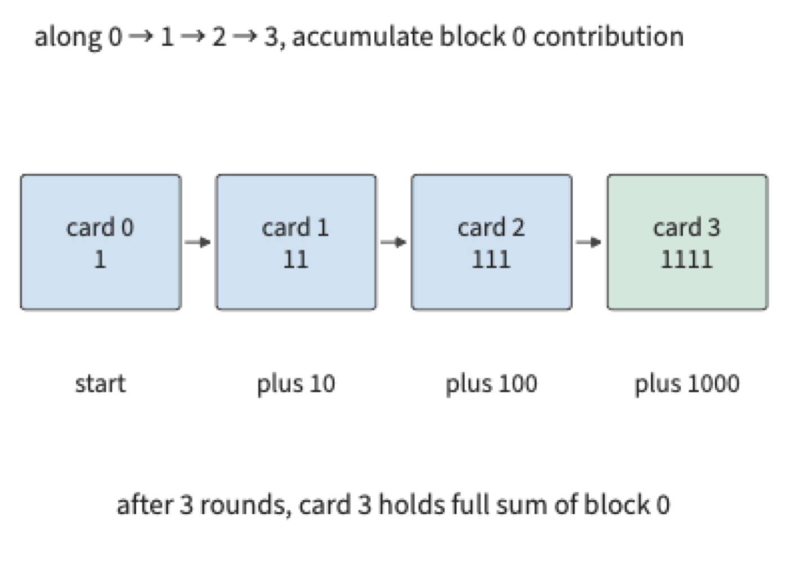
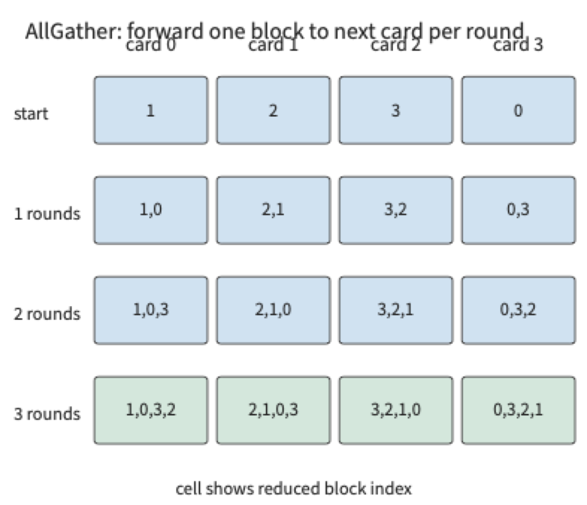
Only three rounds are needed because a block already contains one contribution from its starting point, and after passing through the other three cards it contains all four. In general, ReduceScatter needs \(n-1\) rounds. Afterward each card forwards the block it has completed to the next card, gaining one more block each round; after another \(n-1\) rounds, every card has collected all blocks. The total amount sent per card is therefore \(2(n-1)M/n\), over \(2(n-1)\) rounds.
Let the fixed overhead per round be \(\alpha\) and the effective bandwidth of each directed edge be \(B\); each card waits for its current round's send to complete before entering the next round, giving the time model
The first term grows with the card count, while the second gradually approaches \(2M/B\). The ring algorithm splits large data into small blocks so all cards transmit simultaneously; when the data volume is small, the time spent on per-round startup dominates instead.
Worked example: after accounting for reduction communication, how much more speedup does increasing TP card count still deliver? Still using Qwen3-32B's 128K session. Each reduction's input is one token's BF16 hidden vector, \(M=10\) KiB; on an HGX H100, each card's bandwidth via NVSwitch is \(B=450\) GB/s per direction; take the per-round fixed overhead \(\alpha\) as the NVLink one-way latency of 0.822 μs measured on the same eight-H100 server in the MSCCL++ paper. Find the single reduction time and Equation (6-5)'s time for TP2, TP4, and TP8.
Solution: TP8 requires fourteen rounds total, with startup overhead summing to 11.51 μs; each card sends 17.5 KiB, taking about 0.04 μs to transmit, for a single reduction of about 11.55 μs. The other scales are computed the same way by substituting into Equation (6-9). The TP1 row is included only for comparison — a single card cannot even hold one 128K session:
| TP card count | Local memory access | 128 reductions | Single-step time |
|---|---|---|---|
| 1 | 29.35 ms | 0 | 29.35 ms |
| 2 | 14.68 ms | 0.21 ms | 14.89 ms |
| 4 | 7.34 ms | 0.64 ms | 7.97 ms |
| 8 | 3.67 ms | 1.48 ms | 5.15 ms |
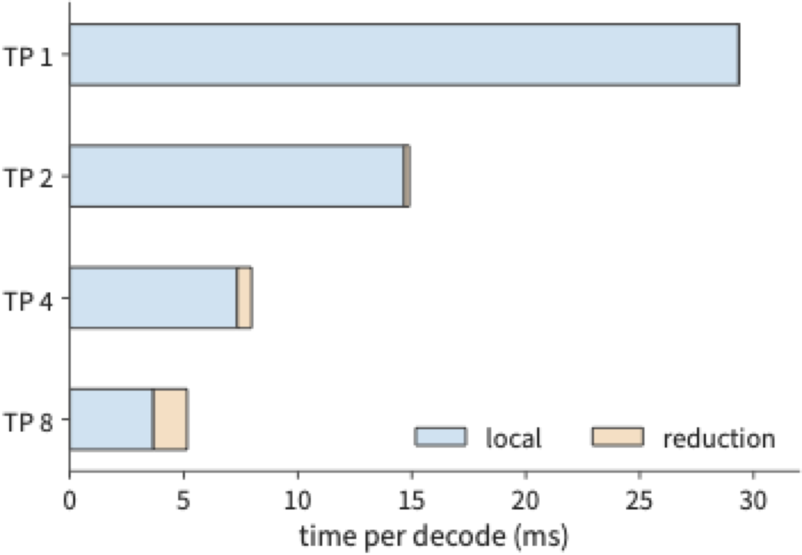
In the figure, the blue portion shortens as card count increases, while the orange portion gradually lengthens. Going from two cards to four cards, local memory access time drops by about 7.34 ms while communication increases by about 0.42 ms, for a net saving of about 6.92 ms. Going from four cards to eight cards, local memory access time drops by only about 3.67 ms more while communication increases by about 0.84 ms, cutting the net saving to about 2.83 ms. The two sides of Equation (6-6) gradually converge, but eight cards is still faster.
At this point, increasing bandwidth yields almost no benefit. In a single eight-card reduction, 11.51 μs comes from startup; even if transmission time dropped to zero, we would still have to wait through these fourteen rounds. Doubling the bandwidth saves only about 2.5 μs for the whole step; halving the fixed overhead per round, however, saves about 0.74 ms across 128 reductions.9
The tree algorithm starts from the number of rounds. Four cards first pair up and reduce, then the root node merges the results — reduction takes two rounds; broadcast then takes another two rounds, for four rounds total. When \(n\) is a power of two, an unsegmented binomial tree has \(2\log_2n\) rounds total, and each round on the critical path transmits the complete tensor:
For eight cards and 10 KiB, this comes to about 5.07 μs, shorter than the ring algorithm's 11.55 μs. When the data volume grows to 8192 tokens' 80 MiB, the ring algorithm needs about 0.34 ms while the tree needs about 1.12 ms: the time saved by fewer rounds no longer offsets the extra time from repeatedly passing the complete large tensor along the critical path. Setting the two equations equal gives a crossover around 680 KiB; once the data volume passes this value, the faster algorithm switches to the other one.
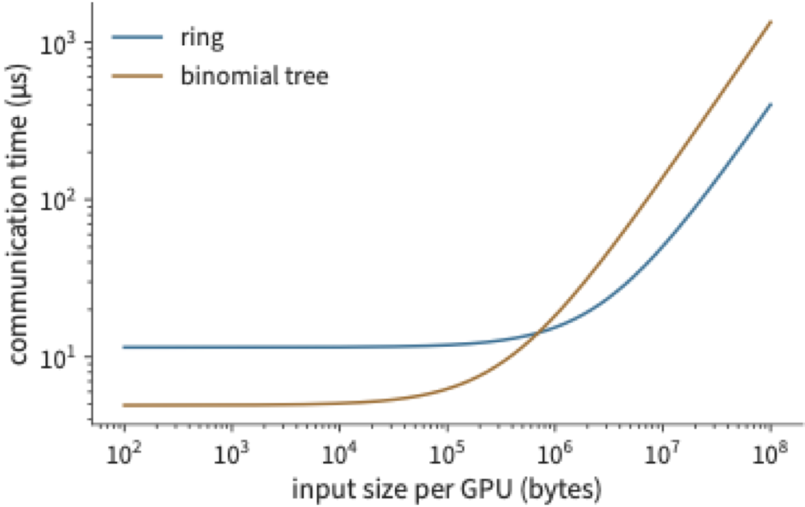
Experiment 6-4 · Extension: at what data volume does ring reduction become faster than tree reduction?
(a) Following the sending rule in Figure 6-23, trace three rounds of reduction for block 1, writing out which card holds the block each round and which cards' contributions have already been accumulated into it.
(b) Find the per-card send volume for four-card and eight-card ring reduction, then derive the tree reduction time for the same data volume.
(c) Find the data volume at which the two reduction algorithms' times are equal under an eight-card deployment; recompute after halving \(\alpha\), and explain why the crossover data volume changes.
(d) Substitute the tree algorithm's time for reducing 10 KiB of data into this chapter's Qwen3-32B example, find the eight-card single-step time, and compare the benefit of algorithm choice against doubling bandwidth.
6.4.3 Resource contention between the communication library and computation¶
Both ring and tree algorithms must actually be executed by software on each card. A communication library is software that implements collective communication operations, such as the NVIDIA Collective Communications Library (NCCL). The corresponding implementation on Ascend is the Huawei Collective Communication Library (HCCL). The application first establishes a communicator, assigns each card in the group a rank, then submits operations specifying the buffer, element count, data type, reduction operation, and the CUDA stream involved. Calls across cards in the group must match each other according to the interface's requirements, including call order and data count; a call returning generally only means the operation has been submitted to the stream, and does not mean the buffer can be reused while still in transit. Whoever uses the result must wait via ordering within the same stream or an explicit event dependency. Collective communication also cannot be treated as a global synchronization point usable from arbitrary host code.
In MoE, the number of tokens dispatched between any pair of cards varies with the batch. An equal-length All-to-All cannot express this unequal-length exchange, so the runtime must organize counts, offsets, packing, and receive space itself. NCCL can express arbitrary pairwise exchanges using grouped point-to-point Send/Recv; every send must have a matching receive, and communications that need to advance together must be placed in the same group, or they will serially wait on an operation the other side has not yet issued. Dedicated expert-parallel communication libraries further combine routing information to implement dispatch and combine. Whichever implementation is chosen, the library version and specific interface should be recorded, and a fixed-size All-to-All test should not be mistaken for actual MoE communication.30
When measuring NCCL, it is also important to distinguish the two kinds of bandwidth it reports: algbw is the data volume defined by the test divided by time, while busbw is converted based on the collective operation's actual transfer volume. For an \(n\)-card AllReduce, if each card's input is \(M\), then \(\mathrm{algbw}=M/T\) and \(\mathrm{busbw}=2(n-1)M/(nT)\). For example, in the public record saved for Experiment 7-3, across two HGX H100s with 16 ranks total, an AllReduce of 64 MiB per card took 466.1 μs, giving an algbw of 143.99 GB/s and a busbw of 1.875 times that, or 269.98 GB/s. busbw is a normalized metric and cannot be directly treated as the actual throughput of any single NIC; hierarchical communication, in-switch reduction, and link sharing still need to be counted item by item along the physical path described in Chapter 7. With small data volumes, latency matters; with large data volumes, sustained bandwidth matters; and when placed inside model execution, what matters is the entire span from data readiness to consumption.30
When Section 6.4.2 compared ring and tree, it treated a single communication as an isolated operation. In actual execution, communication is often overlapped with computation from another micro-batch, and the two contend for accelerator resources. Reduction requires reading partial sums, performing addition, writing back the result, and advancing the communication. This work occupies SMs, HBM, and accelerator interconnect; matrix multiplications running at the same time also need these resources. Once communication and computation overlap, the speed each would have had running alone no longer holds.
The accompanying Experiment 6-5 measures this effect. The experiment uses Gloo (a collective communication library supporting execution environments such as CPU) to run AllReduce across four CPU processes, while having each process also run a matrix multiplication, recording the times of each running alone and running concurrently, taking the median of five runs:
| Reduction data volume | Communication alone | Computation alone | Communication when concurrent | Computation when concurrent | Concurrent group completion |
|---|---|---|---|---|---|
| 4 MiB | 2.67 ms | 11.53 ms | 6.14 ms | 11.52 ms | 11.58 ms |
| 64 MiB | 36.92 ms | 11.03 ms | 45.21 ms | 12.89 ms | 45.24 ms |
At 4 MiB, communication running concurrently with the matrix multiplication took more than twice as long as alone, yet still finished before the matrix multiplication, so the group completed in 11.58 ms — almost the same as running the matrix multiplication alone — with communication hidden by computation. At 64 MiB, communication rose from 36.92 ms to 45.21 ms, and the matrix multiplication also rose from 11.03 ms to 12.89 ms; running the two separately would take about 48.0 ms combined, so running concurrently saves only about 2.7 ms, not the full 11 ms of the matrix multiplication. Evaluating overlapped execution requires comparing the times of the two running concurrently, not simply subtracting times measured separately for each alone.12
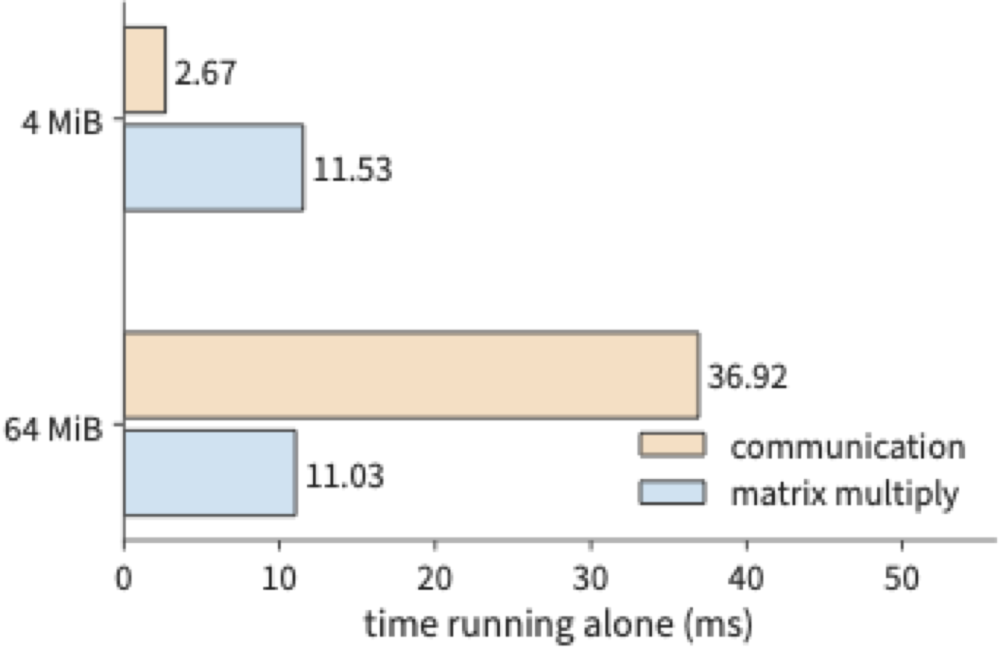
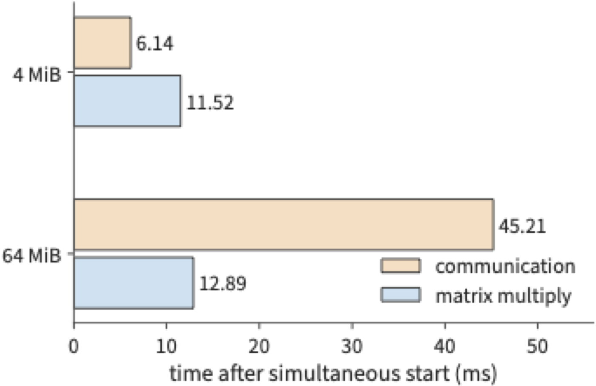
The same reasoning applies on GPUs. Increasing the number of communication threads and channels speeds up transmission when run alone, but also occupies execution resources needed by computation, so choosing a configuration based solely on the standalone communication bandwidth can slow down the overall result. The collective communication auto-tuning system AutoCCL therefore records actual communication time during training, letting its feedback include concurrent interference; it first selects the algorithm, protocol, and transport implementation, then searches over threads, channels, and chunking. The paper reports that under interference from recomputation, AllGather bandwidth improved from 18.26 GB/s to 32.44 GB/s. Searching and switching themselves take time: if the search costs an extra \(S\), and each subsequent call saves \(\Delta\), at least \(S/\Delta\) calls are needed to recoup the cost.11
6.4.4 Communication fusion, accelerator-initiated communication, and dedicated offload¶
Speeding up communication alone does not necessarily speed up overall execution, so we should distinguish two kinds of improvement: reducing the number of communication startups and data read/writes, and reducing communication's occupation of compute resources. In the Qwen3-32B eight-card example, the startup overhead of 128 reductions was about 1.47 ms. Around this overhead, three different aspects can be changed: how much work one startup does, who initiates it, and who performs the movement and reduction.
Fusion lets adjacent operations join within a single kernel. For example, after reduction, a residual must still be added and RMSNorm performed; executing them separately writes the result back and reads it in again, incurring multiple startups. After fusion, processing can continue while the data is still near the compute unit. Normalization must wait until reduction produces the complete input: ignoring the small epsilon constant used to avoid division by zero and the learnable scale parameter, \(\operatorname{RMSNorm}([1,0]+[0,1])=[1,1]\), whereas normalizing separately and then adding gives \([\sqrt2,\sqrt2]\) instead. Fusion must preserve this execution order to obtain the same computation result.
Accelerator-initiated communication eliminates the round trip between host submission and accelerator execution: once a kernel computes the data, it can directly initiate subsequent communication, shortening the wait from computation completion to communication start. Dedicated offload hands movement, reduction, or synchronization to a copy engine, a communication processing unit, or logic inside a switch, freeing general-purpose compute units for matrix computation.
Ascend's Collective Communication Unit (CCU) centralizes movement, reduction, synchronization, and completion handling into a communication unit; part of NCCL's paths use intra-node Copy Engines and inter-node CPU proxy threads (host threads that submit requests to the NIC on the GPU's behalf) to handle data movement. What these mechanisms change is who performs this work. If computation is slowed by contention with communication for SMs, freeing up SMs shortens the computation; if the bottleneck is a shared network egress, the number of bytes that must pass through that egress is unchanged.2111
Who initiates a communication request determines how many times the control path crosses PCIe, and also whose cores it occupies. Figure 6-29 compares three locations. CPU proxy thread: after the GPU finishes computing data, it writes a ready flag in host memory; a CPU thread polls and detects it, constructs a request descriptor (a record describing one transfer), and rings the NIC's doorbell (writes a NIC register to notify it of a new request); the NIC then reads the request descriptor from host memory. The completion record is also written back to the host, and the CPU relays it to the GPU. The control path crosses PCIe three times, each a few hundred nanoseconds; a CPU thread can only process a limited number of requests per second, so large batches of small requests queue up here. The GPU's SM: the GPU directly constructs the request descriptor and rings the doorbell in its own memory; the NIC reads the request descriptor from GPU memory, and the completion record is written back to GPU memory for the SM to poll. The CPU is removed from the critical path, but the control path still crosses PCIe twice; the cost is that some SMs must be devoted to constructing requests and polling completions, and those SMs cannot simultaneously do matrix computation. NVIDIA's GPUDirect Async and the low-latency kernel of the expert-parallel communication library DeepEP take this path. A processor on the NIC: NICs like BlueField have built-in multi-core, multi-threaded data path processors, so constructing the request descriptor, ringing the doorbell, and fetching the request descriptor can all stay inside the NIC; the host need only issue a single trigger for a batch of operations. The control path no longer crosses PCIe and occupies neither SMs nor CPU cores. Across all three locations, the payload at the initiating end must be moved out of GPU memory, and the completion record written back to GPU memory, each crossing PCIe once — these two items do not change with the initiation location. The receiving NIC reads and writes memory on its own host, crossing PCIe once more on that side. The trade-off is therefore: who supplies the cores, how long the control path is, and how many requests per second can be initiated. Section 7.3.3 will sum up the time for each crossing, and Section 7.3.4 will fold the initiation rate into the throughput model.29
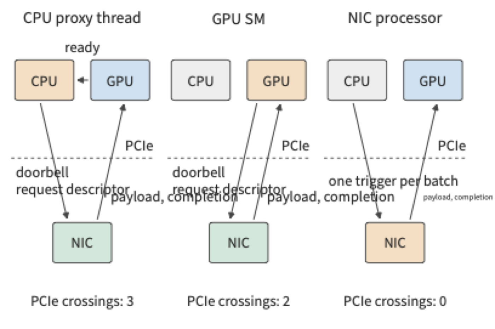
Return to the 128 small-data-volume reductions from the start of this section. The framework selects a communication implementation based on data volume and connection method. When Qwen3-32B processes 1, 4, or 16 tokens at a time, the reduction input is 10, 40, or 160 KiB respectively, and frameworks like vLLM can choose specialized implementations for these small data volumes. This gives \(T_{\mathrm{AR}}\) in Equation (6-5) two directions for improvement: reducing the number of algorithm rounds, or shortening the software and execution overhead per round.10
Experiment 6-5 · Extension: how much time can communication optimization save, and when does it offset the setup overhead?
(a) Using the measured values from Figures 6-27 and 6-28, find how much time is saved running concurrently versus separately at 4 MiB and at 64 MiB, and indicate in each case whether computation or communication determines the overall completion time.
(b) Suppose one round of tuning costs an extra \(S\) in search and switching time, and each subsequent call saves \(\Delta\). Write out the minimum number of calls needed for the cumulative saving to first exceed \(S\); using the overlap benefit measured at 64 MiB as \(\Delta\), find the number of calls needed when \(S=1\) s.
(c) Using two vectors each with two elements, compare the result of reducing first and then applying RMSNorm versus applying RMSNorm separately and then reducing, and determine whether the two orders can be interchanged.
(d) Accelerator optional: compare exclusive and concurrent execution of the same shape, recording ready, start, and completion events, and explain which segment changes the most once resources are shared.
6.5 Supernode Physical Organization¶
6.5.1 Direct Connection, Switching, and Hierarchical Topology¶
The algorithms and communication libraries in Section 6.4 determine who sends what to whom, and how much, in each round, but they say nothing about which physical connections the data travels over. Collective algorithms specify the logical senders and receivers; physical topology determines which devices and links the data actually traverses. Two cards may connect directly, or they may relay through a switch, another card, or host memory. When multiple transfers share one interface, they must queue for the same bandwidth.
Worked example: Does adding one more server make TP16 faster than TP8? Two HGX H100 servers, 16 cards total, are connected between servers by each card's own ConnectX-7 NIC. Switching a 128K-context session of Qwen3-32B to TP16 means one tensor-parallel group spans both servers, and every layer's AllReduce must cross the network.
Solution: On local memory access, the weights are halved again, but Qwen3-32B has only 8 KV heads, so at TP16 each KV head is stored once on each of two cards, and the KV each card reads is the same as at TP8 — local time drops only from 3.67 ms to 2.48 ms. On communication, if the 16 cards form a ring, every round must wait on the hop that crosses the NIC; taking the unidirectional InfiniBand latency (the low-latency switched network used between the servers) of 3.76 μs measured on the same platform in the MSCCL++ paper, one reduction takes 30 rounds, roughly 113 μs. Actual communication libraries do not do it this way. The nccl-tests (NCCL's collective communication benchmark) results saved in Experiment 7-3 happen to include an AllReduce on exactly two HGX H100 servers with 16 ranks; for a 10 KiB message, taking the recorded 16 KiB bucket, the measured value is 32.74 μs:
TP8 within a single server is 5.15 ms, so TP16 is actually about 1.52 ms slower. The added cards reduce per-card weight reads, but this comes at the cost of more expensive cross-server synchronization; even using an actual communication library's hierarchical algorithm, each reduction still takes about 33 μs — nearly three times the 11.55 μs of an in-machine ring reduction.
Getting more cards to collaborate efficiently requires enough ports and switching capacity. If a card connects directly to all \(N-1\) other cards, it needs \(N-1\) connections. Switches consolidate connections: a card first connects to the switching layer, which then forwards to the destination. The number of ports a switch chip provides is called its radix.
Take the third-generation NVSwitch used in the HGX H100 as an example: one chip has 64 NVLink 4 ports, each at 25 GB/s per direction. Used as a leaf switch: 32 ports connect down to GPUs and the other 32 connect up to spine switches, giving 800 GB/s total bandwidth on both the GPU side and the uplink side. If instead configured as 48 down and 16 up, more GPU links can attach, but together they can send at most 400 GB/s upward — only a third of the downlink total bandwidth. With the total port count fixed, connecting more GPUs leaves fewer uplink ports and less uplink bandwidth. The NVLink Switch System of the DGX H100 (NVIDIA's complete system built on the HGX H100) connects multiple servers into the same NVLink switching fabric using exactly this tradeoff: each node exposes only half its total NVLink bandwidth outside the node, i.e., 2:1 convergence.38
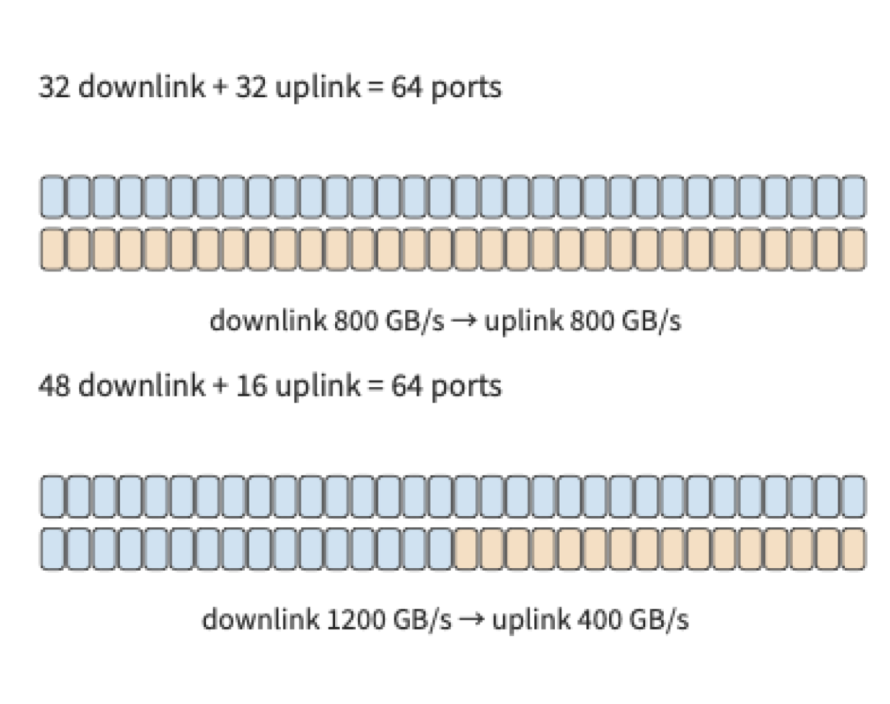
Extend the switching layer beyond a single chip: four leaf switch chips each with 32 downlink ports give 128 downlink ports total. Pair this with 32 spine switch chips, each connected by one link to each of the four leaf switch chips, exactly filling each leaf switch chip's 32 uplinks. If a system is divided into two parts, all the links connecting the two parts together are called a cut set. If some stage requires \(V_{A\to B}\) bytes to cross the cut set from side A to side B, and the cut set's total bandwidth in that direction is \(B_{A\to B}\), the transfer requires at least \(V_{A\to B}/B_{A\to B}\). The switch's port allocation determines the cut set's total bandwidth.
Port count determines how many links exist in total; routing determines which links the data concentrates onto. Even when every card sends the same amount of data, different paths create different bottlenecks. Connect 16 cards into a bidirectional physical ring and observe the first three rounds of a ReduceScatter on an 8 MiB input. A recursive algorithm doubles the distance to the peer each round; Swing is a collective communication algorithm designed for torus topologies that spreads link load by varying the peer each round. Both algorithms have each card send the same 4, 2, 1 MiB per round, but to different peers:
| First three rounds | Recursive path | Swing path |
|---|---|---|
| Physical hops per transfer | 1, 2, 4 | 1, 1, 3 |
| Maximum unidirectional link transfer | 4, 4, 4 MiB | 4, 2, 2 MiB |
| Cumulative transfer across all physical links | 64, 64, 64 MiB | 64, 32, 48 MiB |
In the third round, the recursive algorithm's data travels four hops, and the busiest link simultaneously carries four 1 MiB transfers; Swing's data travels three hops, and its busiest link carries only two. At TPU v4's 50 GB/s per direction per ICI (inter-chip interconnect) link, the bottleneck-link-determined transfer times for the first three rounds are approximately 252 and 168 μs respectively. The transfer time drops by a third because there is less data on the shared link.13
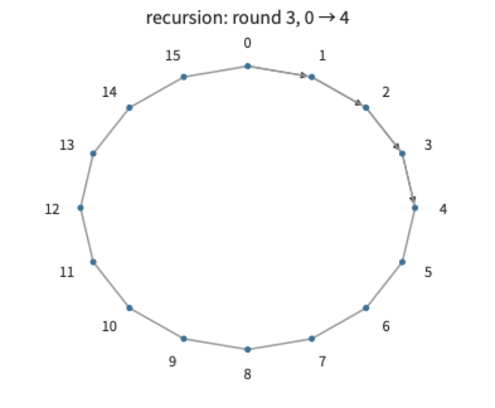
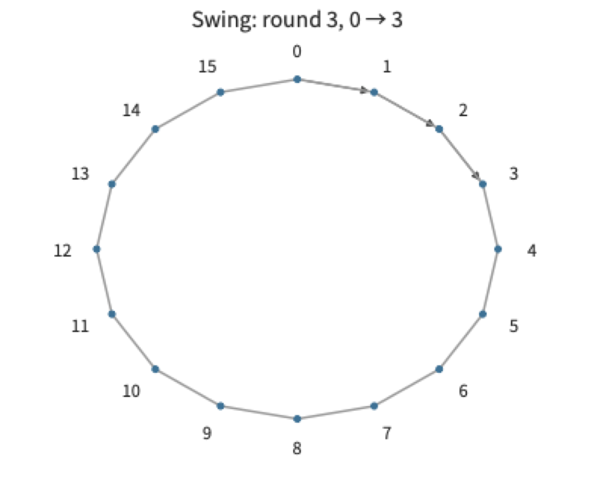
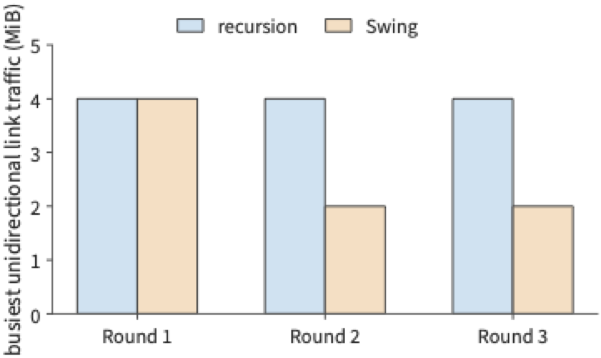
Relaying through host memory is another form of the same problem. Non-uniform memory access (NUMA) organizes host memory near different CPUs, so cross-CPU reads must cross the interface between processors. Suppose cards 0 and 1 attach to NUMA node A, and cards 2 and 3 attach to node B; a ring reduction across four cards sends 48 MiB total. If all relay buffers are placed on A, the inter-CPU link must carry 24 MiB per direction; if the buffer is placed near the sending card, and cards on the same NUMA node are made adjacent in the ring, this drops to 12 MiB per direction; if the ring instead alternates across NUMA nodes, it returns to 24 MiB per direction. The DGX H100's host is a dual-socket design: two Xeon 8480C processors each with their own NUMA node, up to 4 UPI (the interconnect between Intel processors) links between the two CPUs at 16 GT/s each; each GPU connects to the host over PCIe Gen5 x16 at 64 GB/s per direction. Across the three schemes, the data volume each card moves in and out over PCIe stays the same, but the data volume over UPI varies 2:1:2, and the cross-CPU transfer time varies accordingly. The buffer's placement and the card's order in the ring together determine the data's movement path.14
Design case: direct-connected torus or switched network? In the examples above, data travels either directly over one link or through a switch. Connecting 64 cards into a supernode has two common approaches. One is to connect each card directly to its neighbors: arrange 64 cards into a \(4\times4\times4\) cube, with each card connecting to two neighbors along each of three dimensions, and each dimension wrapping end to end — this is a three-dimensional torus. The torus is a topology long used in supercomputers, and TPU carries it forward. The other approach connects each card only to switch chips, which forward to the destination; NVL72 and CloudMatrix384 take this route. Both approaches give each card the same six ports at 50 GB/s per direction — exactly TPU v4's per-chip ICI configuration; the difference is whether the other end of each port connects to a neighbor or to a switch chip. Figure 6-34 shows the path a single transfer takes under both connection schemes.
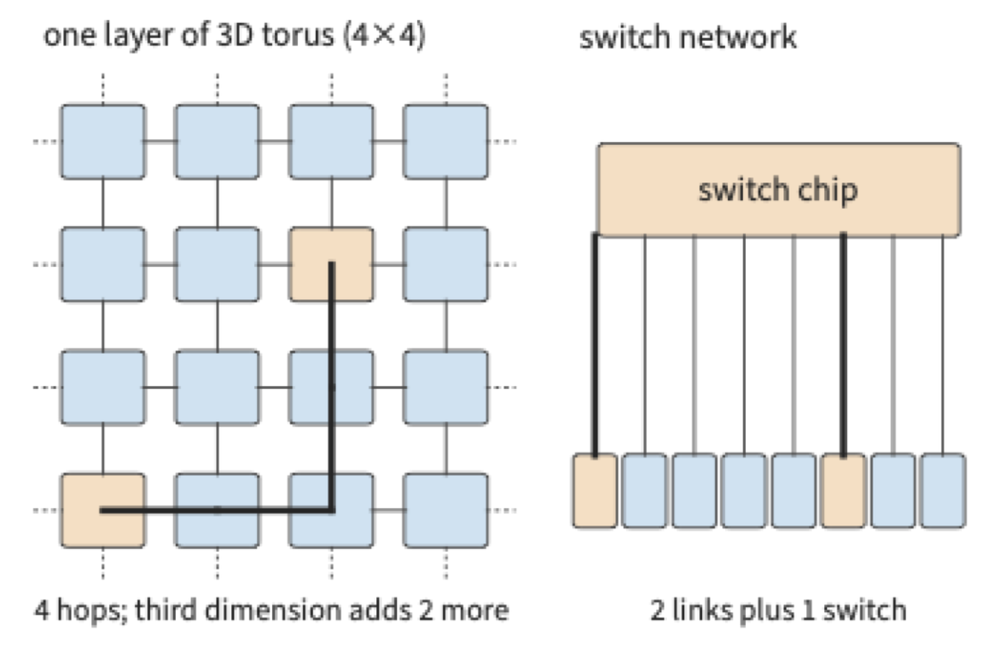
First compare hop count. In the torus, the two farthest cards are two hops apart in each dimension, six hops across three dimensions; in the switched network, any two cards are two links plus one forwarding step apart. Suppose each pass through a chip's router or a switch chip adds 200 ns — this is the no-load latency target set by the open accelerator interconnect standard UALink 2.0 specification for a 128-lane (serial channel) switch chip; propagation time on the link is neglected. The farthest two cards on the torus must pass through 5 intermediate chips, versus only 1 switch chip on the switched network, so the torus takes an extra 0.8 μs per transfer. The single-instance gap is small, but decode performs two reductions per layer, and Qwen3-32B's 64 layers means 128 of them; if every one must wait on the farthest card, the torus accumulates an extra wait of about 0.10 ms — about 7% of the 1.48 ms total reduction time for eight-card TP. When the card count grows to \(8^3=512\), the torus's farthest distance becomes twelve hops; the switched network only needs one more level of switching, becoming four links plus three forwarding steps.
Next compare traffic patterns. The first is dimension-wise reduction: split the AllReduce into ring-based ReduceScatter and AllGather along the x, y, and z directions, transferring only between adjacent cards at each step, with all six links working simultaneously. Here the torus uses the full bandwidth of every card's port, matching the switched network's speed. The TPU compiler maps data-parallel and model-parallel groupings exactly onto the torus's dimensions. The second is uniform All-to-All: each card sends one share to each of the other 63 cards, which is the pattern of MoE dispatch. On the torus, each share averages three hops (one hop per dimension on average); with 64 cards each sending \(M\) bytes, all links together must carry \(3\times64M\), spread across 384 directed links, giving \(M/2\) per link. On the switched network, each card's six ports each carry \(M/6\). Taking \(M=32\) MiB, the torus needs at least about 336 μs and the switched network about 112 μs — a threefold difference; at 512 cards the torus's average of six hops makes the gap sixfold. Figure 6-35 puts both patterns side by side.
![Figure 6-35: Six 50 GB/s ports per card, 32 MiB sent per card. Both topologies use full port bandwidth for dimension-wise reduction; for uniform All-to-All, the torus's data averages three hops, so the data carried by shared links increases, rising to six hops at 512 cards. The figure shows the lower bound given by link load, excluding startup overhead and queueing; the switched network is computed as non-blocking, i.e., the switching layer does not limit all ports from sending and receiving at full speed simultaneously.](images/figure-6-topology-patterns.png)
Finally compare hardware cost. A 64-card torus requires \(64\times6/2=192\) links and no switch chips at all — the router is built into each chip; the switched network requires 384 links and six 64-port switch chips. Once the card count exceeds one switch chip's port count, the switched network needs an additional level: CloudMatrix384 places 7 first-level switch chips in each of 48 nodes for its 384 NPUs, then connects them through 7 sub-planes each with 16 second-level switch chips, for 448 switch chips total, with the second-level switch chips housed in 4 communication cabinets. The torus, by contrast, needs only six links per card at any scale, at the cost of growing hop count with scale and declining per-card cut-set bandwidth with scale — Section 6.5.4 will compute this.
Together, these three comparisons form the basis for choosing a topology: is the workload dominated by regular collective communication, or by a large volume of small transfers with arbitrary destinations and All-to-All patterns; how many cards does the collaboration domain need; and is it worth trading switch chips and more cabling for equal distance between any two cards. Sections 6.5.3 through 6.5.5 examine the choices NVIDIA, Google, and Huawei each made on these three questions.18
Experiment 6-6 · Extension: how communication topology and buffer placement affect transfer time
(a) Recompute the single-step time for TP16 on two HGX H100 servers, then find what the cross-server AllReduce time would need to drop to for TP16's single-step time to exactly match TP8 within a single server.
(b) For a 64-port NVSwitch, compare the 32/32 and 48/16 downlink/uplink port allocations, and compute the average available bandwidth per link when all GPU links send upward simultaneously.
(c) Using Figure 6-31, sum the data volume passing over the same directed link in round three, and explain the distinction between hop count and link transfer volume.
(d) In the NUMA example, first move the buffer, then change the ring order, and diagram the cross-CPU accesses added and removed in each case.
(e) Change the 64-card design case to an \(8\times8\times8\) torus, and find the maximum hop count, the load on each directed link for uniform All-to-All, and how many 64-port switch chips a two-level non-blocking switched network would need; explain which quantity grows fastest with card count.
6.5.2 Interconnect Medium, Power Delivery, and Physical Scale¶
Section 6.5.1 treated a link as a connection with given bandwidth and latency; building these connections in a real system also requires solving problems of transmission distance, cabling, and power delivery. Extending low-latency collaboration farther requires the connection medium to change as well. Short-distance copper wire can directly carry high-speed electrical signals; as distance grows, signal attenuation and crosstalk worsen, making it harder for the receiver to recover data and clock, requiring stronger equalization or retiming circuits. Thicker cables and more connections also consume chassis and cabling space. Choosing a connection medium requires weighing transmission distance, signal loss, and cabling density together.
Optical connections modulate data onto an optical carrier, suitable for spanning longer distances; but they also add the cost of electro-optical conversion, device power delivery, and maintenance. Pluggable optical modules place the conversion in a replaceable module, while co-packaged optics (CPO) move the optical engine near the switch or compute chip, shortening the high-speed electrical path. The latter increases connection density within a package, but once optical devices are co-packaged with compute or switch chips, cooling, testing, and component replacement must all be designed together. The connection medium determines the implementation cost at a given distance and bandwidth; topology determines how these connections compose into communication paths.15
Power delivery further limits the number of cards that can be installed. Cards are installed by whole servers; let the system power budget be \(P_b\), let fixed supporting power for switches, storage, and so on be \(P_0\), and let each server hold \(g\) cards each drawing power \(P_s\), then
For the DGX H100, the system power ceiling for eight H100s together with CPU, NVSwitch, NICs, and fans is 10.2 kW, an average of 1.275 kW per card; the H100 SXM itself has a power ceiling of 700 W, with the rest coming from the server's supporting components.39 Suppose a rack group's power budget is 120 kW; this example counts only servers, taking \(P_0\) as 0, allowing at most 11 servers, or 88 cards. 64 cards (8 servers) draw 81.6 kW, 72 cards (9 servers) draw 91.8 kW, and 96 cards (12 servers) would need 122.4 kW, exceeding the power budget; the 64-card and 72-card schemes still need their specific configuration determined by switch port count and installation space.
Cooling gives another upper bound. Air-cooled racks carry heat away using fans that push it into the room's air: ASHRAE's liquid-cooling white paper notes that a 40 to 50 kW rack needs as much as 5,000 cfm (cubic feet per minute) of airflow, while the best floor air-supply vents provide only 1,900 cfm; in a 50 kW rack, the fans alone consume at least 5 kW. This example takes 40 kW as the threshold for air-cooled racks: one rack can hold at most 3 DGX H100 units, i.e., 24 cards at 30.6 kW; 4 units would need 40.8 kW; the example rack layouts in the DGX SuperPOD H100 reference architecture all exceed 40 kW per rack. The 81.6 kW for 64 cards and the 91.8 kW for 72 cards, if concentrated into a small number of racks, both far exceed this threshold, requiring a switch to liquid cooling, which delivers heat directly to a coolant rather than to room air.16
If one switching unit can connect only 64 endpoints, adding a 65th card may require an entire additional set of switching equipment. As card count grows step by step, the cost of supporting switching equipment does not rise smoothly, but jumps abruptly whenever such a group boundary is crossed. Only after using formula (6-11) to find the rough range, and then composing it according to installation units like switches, trays, and racks, can one arrive at a buildable system.
Experiment 6-7 · Extension: how power budget and whole-group scaling requirements constrain accelerator count
(a) Recompute the total power for installing 64, 72, and 96 cards respectively, and using formula (6-11), find the maximum number of cards installable when the power budget rises to 150 kW.
(b) If, past 64 cards, a second level of switching equipment must reserve power equivalent to one server, 10.2 kW, find the maximum number of cards installable under a 120 kW power budget.
(c) Keeping the power budget and extra switching equipment condition from (b), assuming cards can only be added in whole groups of four servers (32 cards), find the maximum number of cards installable, and explain why the upper bounds in (a) through (c) differ.
(d) Using the single-instance service times obtained earlier, compare the service capacity of two of these accelerator configurations.
6.5.3 NVIDIA: From Eight-Card Servers to Rack Scale¶
Ports, distance, and power together constrain system scale. Under these constraints, NVIDIA's successive generations of systems have evolved interconnect from in-chassis direct connection to rack-scale switched networks. The DGX-1 used eight GPUs in a hybrid NVLink cube-mesh network, where some GPUs connect directly and others must relay through intermediaries. Placing frequently communicating compute tasks on adjacent GPUs reduces the pressure of relaying and shared links.
The DGX-2 uses 16 V100s and NVSwitch. The switching fabric turns "whether a given pair of GPUs connects directly" into "how much data the switching layer can forward simultaneously," expanding the range of usable collaboration. The DGX A100 again uses an eight-card server as its base unit, equipped with NVLink/NVSwitch. These systems adopt different GPU counts and interconnect structures to adapt to chip interfaces, chassis space, and application needs.17
The GB200 NVL72 places 72 GPUs and 36 Grace CPUs into a rack-scale NVLink system. More GPUs within the rack can thereby exchange data frequently over NVLink. Return to the worked example in Section 6.5.1: when Qwen3-32B's TP16 spans two HGX H100 servers, 128 reductions over the network take about 4.19 ms, with a single step around 6.67 ms. If those 16 cards sit within the same NVLink switching domain (the DGX H100's NVLink Switch System connects up to 256 H100s), at about 0.822 μs per round, a 16-card ring reduction takes 30 rounds, so 128 of them take about 3.16 ms, with a single step around 5.64 ms — still slower than TP8's 5.15 ms within a single server. This model has only 8 KV heads, so at TP16 the KV each card reads no longer decreases, while the number of ring rounds doubles. For this kind of model, a larger interconnect domain's value lies not in slicing a single session more finely, but in accommodating more instances, or accommodating a model exceeding a single server's capacity.19
Rack-scale interconnect lets more GPUs participate in the same instance. For small models that fit on a single card, the instance count can be chosen based on latency and throughput requirements; for large models whose weights exceed a single server's total capacity, more GPUs can be used to hold the weights, with each layer's communication running over the in-rack interconnect.
6.5.4 TPU: Topology and Workload Co-design¶
NVIDIA's approach uses a switching layer to expand a GPU's connectivity range. Google's Tensor Processing Unit follows instead the torus from the design case in Section 6.5.1, making model partitioning, the compiler's layout, and physical communication correspond to one another. A two-dimensional torus connects chips along two dimensions, each wrapping end to end; a three-dimensional torus adds another dimension, letting data travel in more directions.
TPU v4 is based on a \(4\times4\times4\), 64-chip electrically interconnected unit, with optical circuit switches (OCS, which change optical paths to connect device ports) then connecting multiple units. This division accounts for both network topology and physical installation: 64 chips and 16 CPU hosts fit into one rack, while the larger \(8^3\) unit, containing 512 chips, requires cross-rack connections.20
Cut-set bandwidth can be used to analyze the communication capacity of this regular topology as it scales. Bisecting a \(k\times k\times k\) three-dimensional torus along one dimension, the physical links crossing the two halves (i.e., this cut set, called the bisection links) number \(2k^2\) total. As \(k\) grows from 4 to 8, the chip count grows from 64 to 512 — eightfold — but the cut-set links grow only from 32 to 128 — fourfold. If every chip must send the same amount of data to the other half, the average cut-set bandwidth per chip is halved. The difference in growth rate between chip count and cut-set bandwidth determines which parallelism layouts suit this shape.
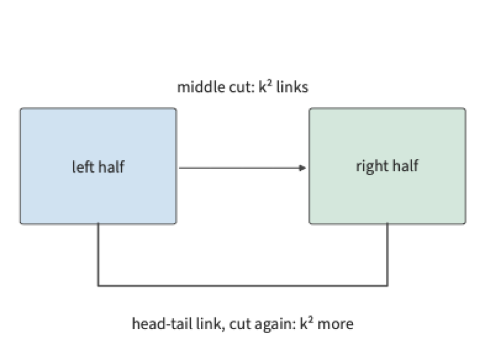
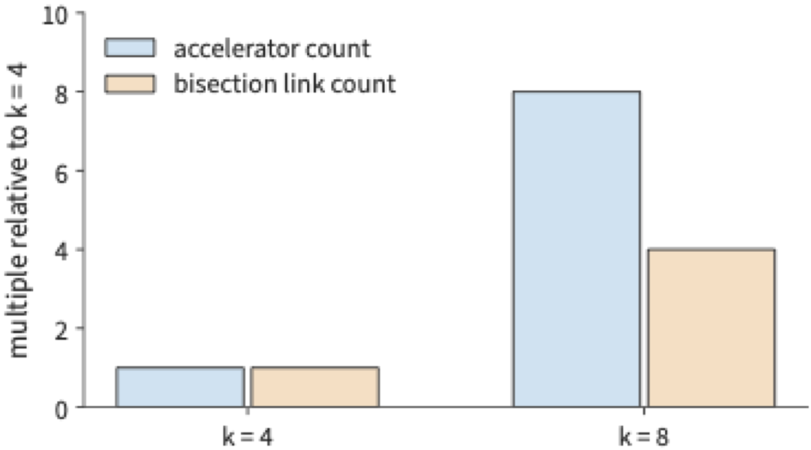
A fixed topology determines cross-partition bandwidth, but the position of idle chips also determines whether a job can obtain the shape it needs. OCS reconnects these electrically interconnected units at a larger scale, assigning appropriately shaped chip subsets to different jobs — such a subset is called a slice. Take a 4×4 chip grid as an example: if two consecutive rows are idle, it can host two jobs each needing an adjacent 2×2 block of chips; but if the same eight idle chips are scattered in a checkerboard pattern, no adjacent 2×2 block can be found. Reconnection can change the shapes available for allocation.
Reconnecting is worthwhile only if the execution time saved exceeds the reconnection's own time cost. The Morphlux study reconfigures optical interconnect topology per task, making connections fit the task's communication needs. Suppose eight TPU v4 chips perform a ring AllReduce on an 8 MiB input, with each chip sending 14 MiB. If this slice originally has only one 50 GB/s ICI link available for that communication group, and reconnection provides three, the transfer term drops from about 293.6 μs to about 97.9 μs, saving roughly 195.7 μs each time. TPU v4's OCS takes millisecond-scale time to switch optical paths: if reconnection takes 1 ms, repeating it 6 times recovers the cost; if it takes 100 ms, it takes 511 times. The longer a job runs, the more worthwhile it becomes to establish a better-suited connection.13
6.5.5 Unified Bus and CloudMatrix¶
The NVIDIA and TPU systems start primarily from accelerator interconnect. Huawei's UB extends the problem further to resource access: after connecting two hosts, can a device on one host directly use another host's memory? My own early thinking on Unified Bus grew out of the boundary between intra-host buses and inter-host networks. Reading the same block of data looks different once it crosses a host boundary — software often has to switch to a message-passing interface and rearrange buffers, and each additional layer of abstraction adds latency. UB aims to remove these abstraction layers and widen the scope of direct resource access, so that compute, memory, and storage can be recombined per task.
This book discusses UB in two places. This section treats UB as a form of supernode interconnect and answers three scale-related questions: where the controller sits, how much interconnect state the on-chip cache can hold, and how long it takes to establish all the connections. Chapter 7 instead follows the path of a single remote access: Section 7.1.3 explains the design motivation for the unified interface, Section 7.3.3 derives the latency of a single read stage by stage, Section 7.3.4 computes the request rate, Section 7.4.2 derives the growth of connection state and the overflow point of the on-chip cache, and Section 7.4.3 discusses on-demand ordering. Both places use the same set of parameters and the same computation script, and the derived results are checked against values I measured in simulation for my own UB implementation, OpenURMA.28
This kind of unification must first answer two distinct questions: for a given operation, whom does it access, what does it read or write, and when can the result be used; and how does that operation's data traverse the network and arrive reliably. UB places the former responsibility in the transaction layer and the latter in the transport layer. "Transaction" here refers to a single communication operation, not a database transaction with commit and rollback semantics.
The transaction layer's Jetty provides applications with endpoint abstractions for submission, receipt, and completion notification, retaining application identity and the context an operation needs; the transport layer's transport channel (called a TP Channel in UB, where TP is short for Transport Protocol and has nothing to do with tensor parallelism) maintains packet sequence numbers, acknowledgments, retransmission, and congestion-control state. When multiple application endpoints access the same remote target, they can share the underlying transport channel, so that each application relationship need not carry its own full set of reliable-transport state. Figure 6-38 shows this separation. A traditional Remote Direct Memory Access (RDMA, which lets a NIC directly read and write authorized remote memory) reliable-connection QP (queue pair, a communication endpoint made up of a send queue and a receive queue) binds application endpoint relationships to transport state fairly tightly; UB instead lets the two kinds of state be sized, timed, and shared independently.27
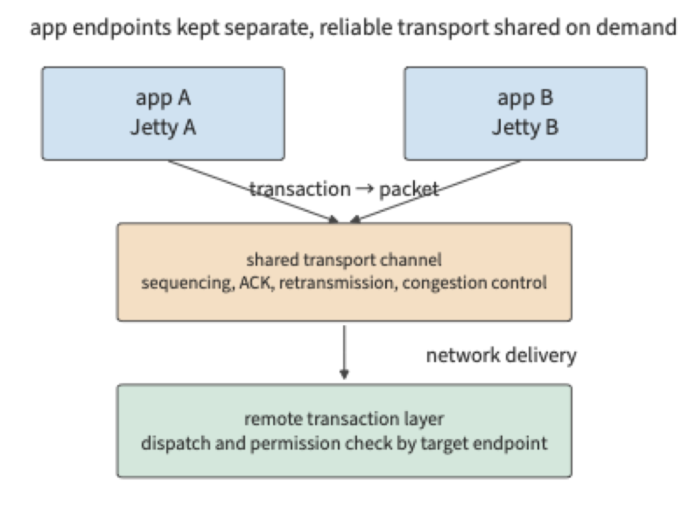
Another key choice is memory semantics. In a one-sided operation, the initiator directly specifies an already-authorized remote memory address, and the remote application need not prepare a matching receive request for every operation. UB supports two ways of initiating such operations: Load/Store, initiated by a processor instruction, and Read/Write, initiated by an explicitly submitted request. Both can access remote memory, but neither implies that caches across devices are automatically kept coherent. Section 7.3.3 compares the two approaches, and Section 7.4.1 explains when data becomes visible and when an operation counts as complete.
Where the controller sits. A traditional NIC is a PCIe peripheral; Section 6.4.4 already traced this initiation path. When a processor initiates a remote read, the doorbell, the read descriptor, the target-side data read, the write-back of data, and the write of the completion record each cross PCIe once — five crossings in total, each costing a few hundred nanoseconds. UB instead attaches the controller to the processor's on-chip bus: the processor executes a Load instruction, the request reaches the controller directly over the on-chip bus, and the returned data is written straight into a register. Figure 6-39 compares these two initiation paths. Section 7.3.3 sums the two paths stage by stage: with a one-way wire latency of 100 ns, a single 64 B read through a PCIe-attached NIC takes about 2.2 μs, of which the five PCIe crossings account for about 1.65 μs; a read through an on-chip-bus controller takes about 0.42 μs. The time saved is not the result of compressing existing stages — it comes from the fact that the processor and the controller share a single address space, so those stages simply cease to exist. Removing the abstraction layer, so that the processor accesses remote memory the way it accesses local memory, is exactly where UB's benefit comes from; the remaining 0.42 μs is dominated by wire latency and remote memory access, and is already close to the hardware floor.
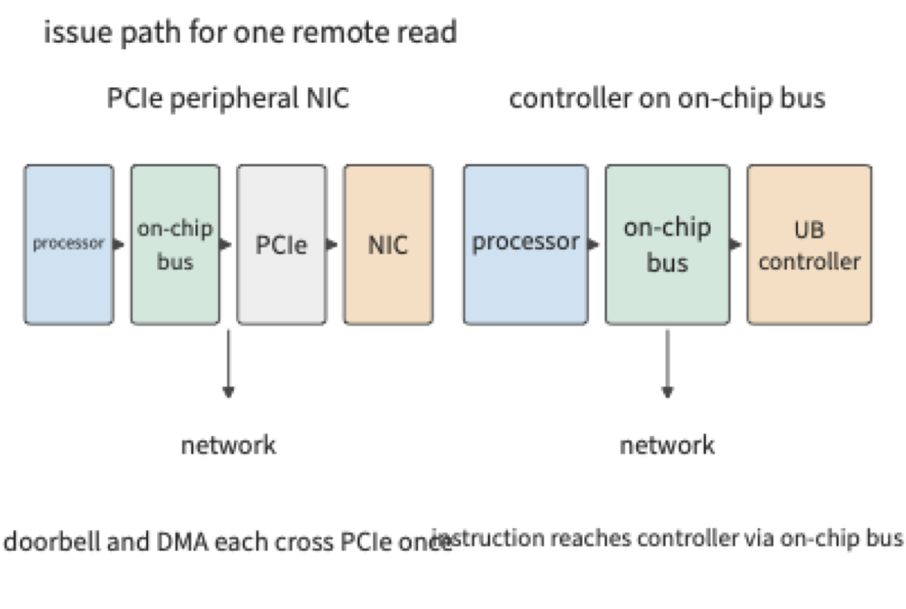
Interconnect scale and on-chip state capacity. A NIC caches the context of each communication relationship on chip; here we take the cache capacity to be 256 KiB. Suppose the interconnect contains \(H\) hosts, each with \(A\) application endpoints, and any two hosts' endpoints may potentially communicate. There are two ways of organizing connection state. The first is per-pair connections, exemplified by RoCE's (RDMA carried over Ethernet) reliable connections: each local endpoint establishes one connection with every endpoint on each of the other \(H-1\) hosts, and each connection stores 512 B of context. The second is UB's endpoint plus channel scheme: each local endpoint stores a 20 B Jetty record and a 32 B memory-segment record, and each remote host corresponds to one 56 B transport channel. Under the two schemes, the state stored per NIC is
Take \(A=8\). With per-pair connections, each additional host adds 32 KiB of state, so a 256 KiB cache can hold only 8 hosts; with endpoint plus channel, each additional host adds only 56 B, and the same cache can hold over four thousand hosts. For CloudMatrix384's 192 hosts, per-pair connections need about 6 MiB — 24 times the cache capacity — while endpoint plus channel needs only about 11 KiB. State that does not fit in the cache must be re-read from host memory on every operation; Section 7.4.2 computes the cost of this: per-pair connections add two extra PCIe DMA reads per operation, about 1 μs.
The third organizational scheme is cache-coherent interconnect, exemplified by NVLink: an accelerator can pull data from a peer's memory directly into its own cache. To keep the various copies consistent, a directory must record which peers hold each cache line, requiring at least 1 bit per peer per line. Suppose the directory tracks \(W=2^{20}\) cache lines (64 MiB of data), with each line carrying an additional 8 B tag; the directory then occupies \(W\,((H-1)/8+8)\) B — about 8 MiB for two hosts, about 136 MiB for 1024 hosts. Every write must also send an invalidation message to every peer holding a copy, and the number of messages grows linearly with \(H\). These two costs limit cache-coherent interconnects to a few dozen peers; NVL72's 72 GPUs sit right at this range. UB does not maintain cross-host cache coherence — when data becomes visible to other devices is something the application must arrange itself (Section 7.4.1) — so of the three state curves, only UB's extends to thousands of hosts. Figure 6-40 plots all three curves.
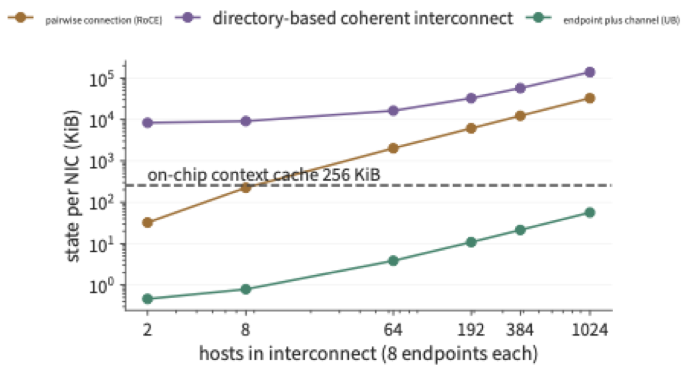
Connection setup time. The amount of state also determines how many control operations a job must execute at startup. Each per-pair connection requires creation plus three state transitions — 4 system calls in total — plus one exchange of connection identifiers with the peer, requiring one out-of-band round trip (a round trip over a channel other than the data path). Taking one system call as 5 μs and one out-of-band round trip as 500 μs, establishing a single connection takes about 0.52 ms. With \(N\) local endpoints accessing \(M\) remote endpoints, \(NM\) connections must be established. Endpoint plus channel needs only 1 system call per each of the \(N\) endpoints, plus 1 system call and 1 round trip per each of the \(M\) remote hosts. With \(N=M=1024\), per-pair connections must establish 1,048,576 connections, taking about 545 s serially and still about 17 s even parallelized across 32 cores; endpoint plus channel need only create 2048 objects, taking about 16 ms once parallelized. Figure 6-41 plots the full process for \(N\) from 1 to 1024. Every job restart or rescaling event repeats this process, so it directly affects the failure-recovery time discussed in Section 6.7.2.
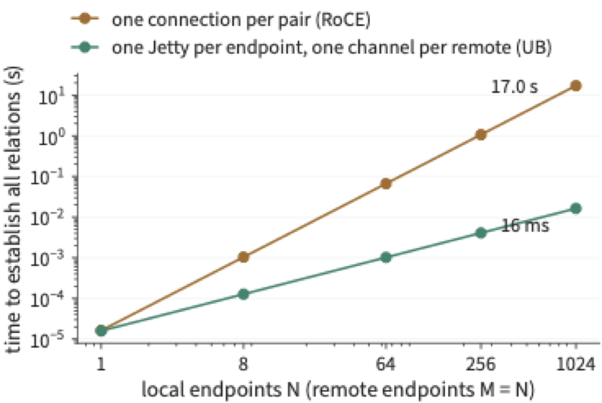
The concrete embodiment of these UB mechanisms is Huawei's CloudMatrix384: the system organizes 384 Ascend 910C NPUs and 192 Kunpeng CPUs through a UB switching fabric, with an RDMA network used outside the supernode; business access is handled by a Virtual Private Cloud (VPC) network, used to isolate and connect tenant resources. Laying a direct connection between every pair of the 384 NPUs would require \(384\times383/2=73\,536\) connections; the switching layer instead achieves inter-device communication through port connections and routed forwarding.22
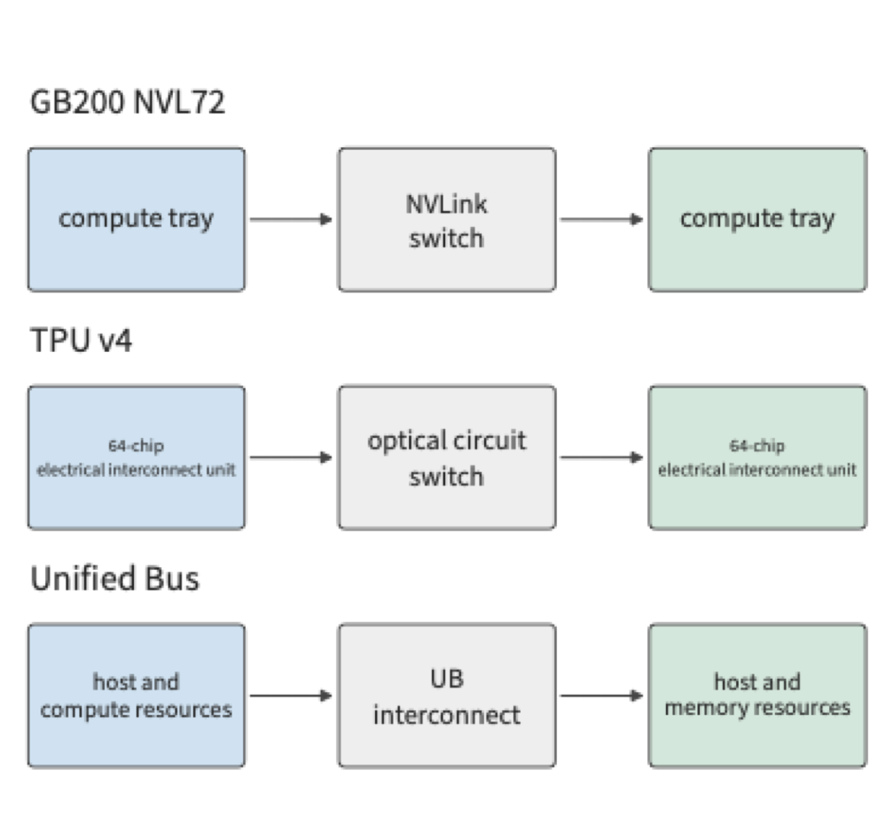
All these systems can adopt the TP2×EP4 parallelism scheme from Section 6.3.1, but the correspondence between groups and physical boundaries differs. Frequent reductions within a tensor-parallel group are best placed on low-latency connections, while exchanging expert results between different expert groups requires sufficient cross-group bandwidth. Only by mapping the algorithm's communication groups onto the physical switching layer can one determine which ports each gather operation occupies.
When computing transfer time from interface bandwidth, one must distinguish unidirectional bandwidth from combined bidirectional bandwidth. For example, Ascend 950's UB has a combined bidirectional line rate of 2016 GB/s; at 72 lanes of 112 Gbit/s each, the unidirectional rate is 1008 GB/s. UBoE is a way of carrying UB communication over Ethernet, while UB Link is UB's own link method. The two are pre-configured to share the same set of serializer/deserializers (SerDes, circuits that convert between parallel data inside a chip and serial signals on a link), so the same set of physical lanes must be allocated between the two uses. How that allocation is made determines the bandwidth actually available to a task.21
Experiment 6-8 · Extension: explaining supernode interconnect structure through communication requirements
(a) Choose DGX-1, DGX-2, or DGX A100, and draw the direct connections or switching layers a communication group passes through.
(b) Recompute the chip count and balanced bisection link count for 4³ and 8³ torus networks, and explain why the cross-partition bandwidth available per chip decreases.
(c) Place TP2×EP4 on two hosts, each with four cards, and mark the cross-host expert-group reductions.
(d) Change the number of endpoints per host to 64, and find how many hosts a 256 KiB cache can still hold under per-pair connections; then enlarge the cache to 1 MiB and determine whether CloudMatrix384's 192 hosts now fit.
(e) Change the out-of-band round trip to 50 μs, recompute the connection-setup time for both schemes at N = M = 1024, and explain which scheme is more sensitive to round-trip latency.
(f) Choose one design from UB or TPU, and explain which requirement — installation, communication, or resource access — drove that system's structure.
6.6 Memory Pooling¶
6.6.1 Insufficient local capacity and global idle capacity¶
Once UB extends resource access across hosts, it gains a concrete use: letting a node short on memory borrow another node's idle memory. Section 6.2's tensor parallelism, pipeline parallelism, and expert parallelism split computation and weights across different cards, lowering the memory requirement per card. Another approach keeps the computation location fixed and instead places part of the data on a different node. This is the basic purpose of memory pooling: giving scattered idle capacity to the tasks that need it.
Consider four nodes, each with one 80 GB H100, with task requirements of 100, 60, 40, and 40 GB respectively. Total demand is 240 GB, less than the total capacity of 320 GB, but task 0's requirement exceeds the capacity of its own node by 20 GB. The idle capacity on the remaining nodes is 20, 40, and 40 GB respectively, totaling 100 GB.
Moving task 0 as a whole to another node would still exceed that single node's 80 GB capacity. If instead its extra 20 GB of data is placed in node 1's idle region, the physical occupancy becomes 80, 80, 40, and 40 GB. Task 0's working set is still 100 GB, of which 80 GB is local and 20 GB remote. In this way, task 0 can make use of memory that was originally idle on another node.
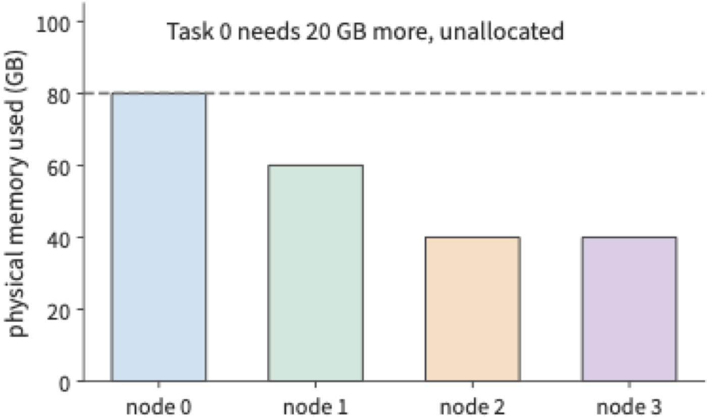
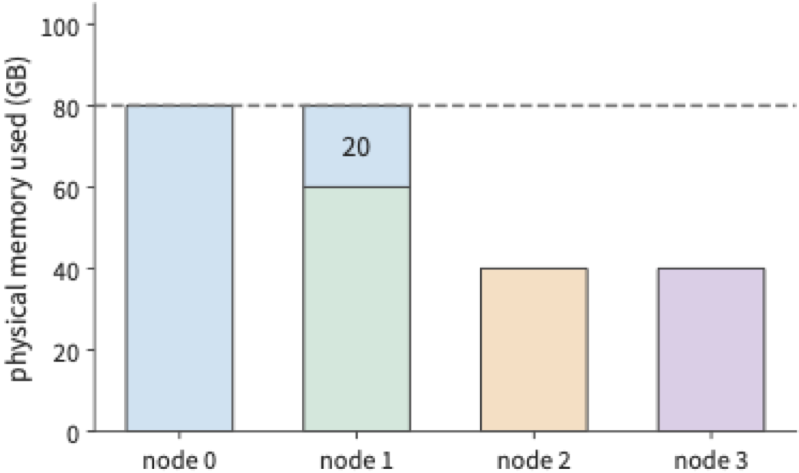
We must distinguish idle capacity before and after borrowing: the other nodes originally had 100 GB of idle memory; after lending 20 GB to task 0, the four nodes together have 80 GB left. Borrowing does not add physical memory — it only lets a task use another node's idle space. My early thinking on the UB memory pool focused precisely on this kind of imbalance across servers; the saving and reuse of KV later became one of its concrete uses.
6.6.2 Memory borrowing and access boundaries¶
Once the 20 GB in the figure has a storage location, the next step is letting node 0 access that memory correctly. Borrowing must first establish who provides the memory and who uses it. The providing node opens up a region, the borrowing node establishes a corresponding address mapping, the system manages access permissions, and it records when that memory can be released and reallocated. During exclusive borrowing, usage rights are handed to the borrower, and the original holder waits until the memory is returned before using it again; shared access instead allows multiple users to access the memory under agreed consistency and synchronization rules.21
For example, suppose node 1 lends a region of memory to node 0, and node 0 must write new KV before starting attention computation. Only once the write is confirmed complete — once the new KV can actually be read — can computation begin; and if node 1 wants to reallocate that region, it must wait for the borrowing to end. Address answers "where to access," permission answers "who can access," and the ordering of operation completion and memory release answers "when it can be used." Address, permission, and access ordering together are what make remote memory usable correctly.
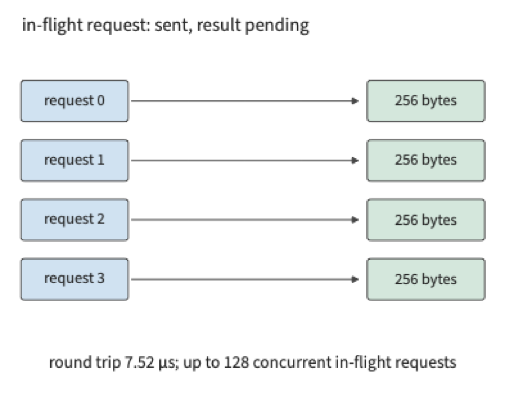
Permissions and completion ordering keep data correct; the waiting process shown in the figure determines read speed. A request takes some time after being sent before a result arrives; to keep the link busy during that wait, multiple requests must be issued simultaneously. Suppose each read transaction returns \(q\) bytes, takes \(L\) from issue to completion, and at most \(u\) transactions may be in flight simultaneously (issued but not yet complete); then at most \(uq\) bytes can be returned every \(L\) seconds. Combining the path bandwidth limit with the in-flight transaction limit gives
Suppose two nodes are connected over an RDMA path via ConnectX-7 NICs, with a path bandwidth of 50 GB/s. A read request takes one round trip from issue to completion; taking twice the InfiniBand one-way latency of 3.76 μs measured for MSCCL++ on an H100/ConnectX-7 platform gives \(L=7.52\) μs. Each read transaction returns \(q=256\) bytes, exactly the size of one KV head's K vector (128-dimensional BF16) for one layer and one token of Qwen3-32B. With \(u=128\), the in-flight data per batch is 32 KiB, and the bandwidth ceiling set by the number of in-flight transactions is about 4.36 GB/s. To reach the path's 50 GB/s, at least
is required. Raising only the line rate while still allowing just 128 transactions in flight leaves the effective read bandwidth limited by the in-flight-transaction count; relaxing this to 4096 transactions raises the in-flight-transaction ceiling to about 139 GB/s, which exceeds the path bandwidth, so the bottleneck shifts to the path's own 50 GB/s. Path bandwidth, transaction size, and round-trip time are tied together through the amount of in-flight data.
6.6.3 Shared capacity and the KV cache¶
Whether remote memory can substitute for local memory also depends on comparing the read bandwidth derived in Section 6.6.2 against the application's read demand. For the same 20 GB of remote data, read frequency determines the average bandwidth required. A full read once a minute needs about 0.33 GB/s on average; once a second needs 20 GB/s; twenty times a second needs 400 GB/s. For the same capacity, the required average read bandwidth can differ by a thousandfold.
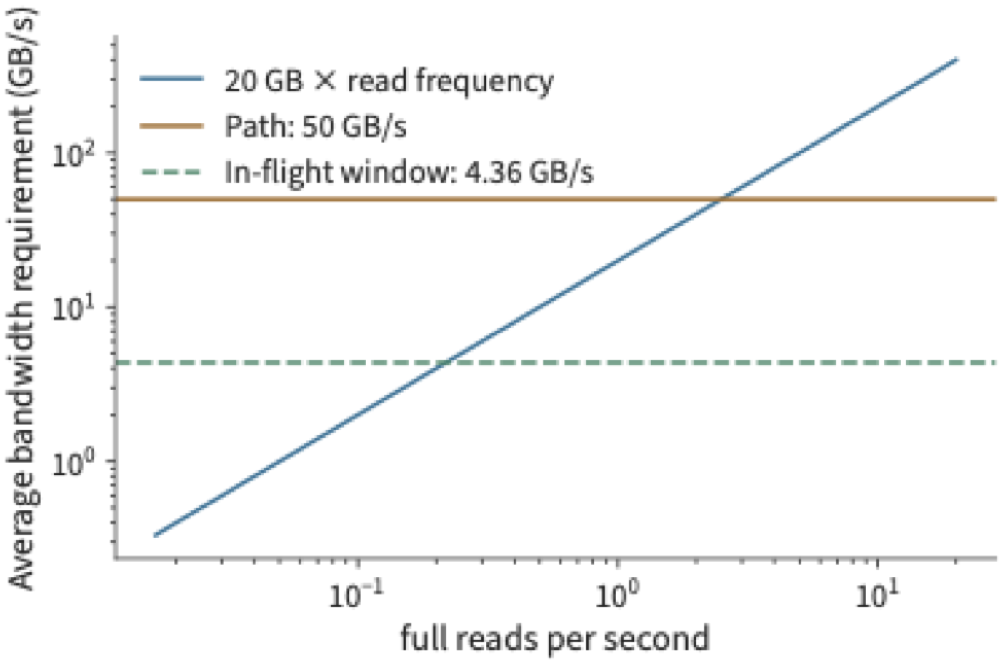
When enough transactions can be kept in flight, a full read over the 50 GB/s path takes about 0.40 s. Issuing a read once a second leaves about 0.60 s idle between reads; issuing one every 0.05 s means new work arrives before the previous read finishes, and the queue keeps growing. If at most 128 transactions can be in flight at once, a read takes about 4.59 s, and even once-per-second issuance will gradually accumulate a backlog.23
How the KV is used determines where it is best placed. While a session waits for the user's next turn, its KV may go unread for a long time, so remote memory mainly serves to preserve state, to be retrieved again when the session resumes; an active session, by contrast, must read its context state at every step, and repeatedly scanning it from a remote location will continuously consume bandwidth. How large that state is depends on the model's context representation: Section 9.2.2 will directly compare, for the same 8192-token context, the byte count and retrieval time under Qwen3-8B's GQA versus DeepSeek-V3's compact MLA design — the latter comes to about half the former.
Data can also be fetched once and then reused repeatedly locally. If the same 20 GB snapshot must be read ten times, reading it ten times over the 50 GB/s path successively takes about 4.0 s; fetching it once (0.40 s) and then scanning it ten times from local H100 HBM at 3350 GB/s takes about 0.06 s, for a total of about 0.46 s. The latter approach occupies 20 GB of local memory space and saves about 3.54 s of access time. So for data that will be read repeatedly, one must also compare remote-read time against local-cache time to decide when to fetch data back to local memory.
Experiment 6-9 · Extension: when remote memory should be read directly and when it should be cached locally
(a) Recompute the physical occupancy across four nodes before and after borrowing, computing the idle capacity of the other nodes before borrowing and the remaining capacity across all nodes after borrowing.
(b) With each transaction transferring 256 bytes, and round-trip times of 7.52 μs and 15.04 μs respectively, find the minimum number of in-flight transactions needed to reach 50 GB/s bandwidth in each case.
(c) Compare the time for a single read with 128 versus 4096 in-flight transactions, assuming the next read is issued only after the previous one completes, and find the maximum number of complete reads achievable per second for continuous reading.
(d) Using this section's remote and local bandwidths, find how many repeated reads are needed before fetching to local memory first yields lower total access time; also state the local capacity this requires.
6.7 From parallelism scheme to supernode scale¶
6.7.1 Larger collaboration groups and more inference instances¶
This section uses the results of the preceding sections to arrange multiple Qwen3-32B sessions across the eight cards of one HGX H100. Four sessions have all completed prefill, each holding KV for 131,064 context tokens. Each session also has one already-generated token, not yet written into KV, used as the next step's input. All four sessions simultaneously request eight more generated tokens, filling exactly the 131,072 positions supported by YaRN. One instance serves one session at a time, moving on to the next session only after finishing these eight steps; requests are distributed round-robin across instances. All eight cards sit within a single server and remain assigned to this group of tasks until all four sessions complete.
Per-step time comes from Equation (6-5). During continuation, the context length in Equation (6-4) runs from 131,064 to 131,071 step by step, with KV access volume increasing progressively. Summing the eight steps gives the session's service time. A waiting session retains only its own KV; sessions on the same instance share model weights. Capacity considerations first rule out eight single-card instances: a single card cannot even hold one 128K session. Following the algorithm of Section 6.2.2, a two-card instance can hold at most two sessions, a four-card instance seven, and an eight-card instance sixteen; in the three deployments, each instance is assigned one, two, and four sessions respectively — all within capacity.
| Deployment | Eight steps for one session | Time when four sessions complete | All sessions complete |
|---|---|---|---|
| Eight single-card instances | Cannot fit | — | — |
| Four two-card instances | 119.1 ms | 119.1, 119.1, 119.1, 119.1 ms | 119.1 ms |
| Two four-card instances | 63.8 ms | 63.8, 63.8, 127.6, 127.6 ms | 127.6 ms |
| One eight-card instance | 41.2 ms | 41.2, 82.4, 123.5, 164.7 ms | 164.7 ms |
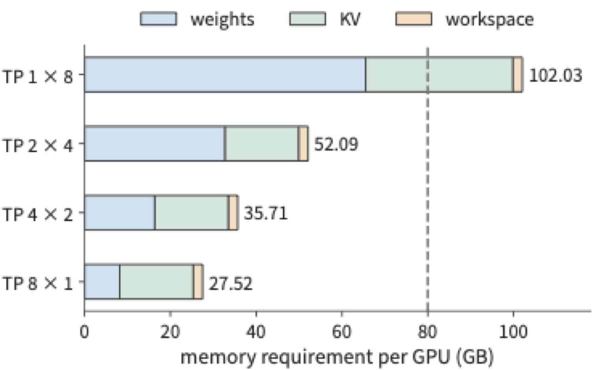
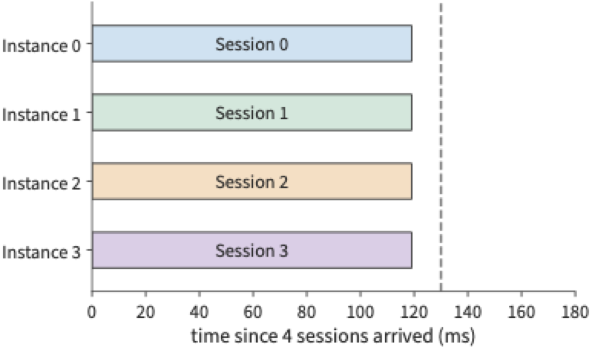
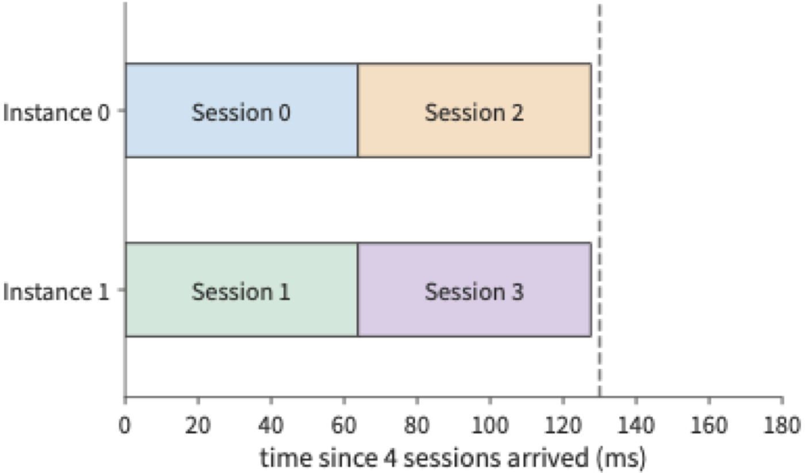
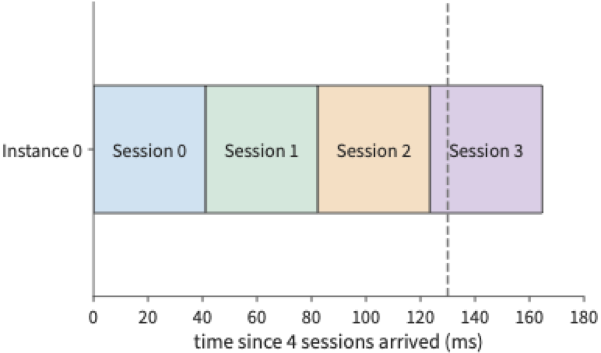
Eight-card collaboration shortens a single session's continuation time from about 119 ms to 41 ms, but with the four sessions queued one after another, all of them finish only around 165 ms. With four two-card instances, each session's continuation takes longer, but all four sessions advance at the same time, and all finish at about 119 ms. Single-card instances could in principle be opened eight at a time, yet none can even hold one session.
Two kinds of parallelism are at work simultaneously here: parallel computation within the model, and concurrent execution across different requests. The matrices within a layer can be split across multiple cards, and independent sessions can be distributed across multiple instances, but both compete for the same eight cards. Distinguishing these two relationships is what makes it possible to choose the size of a collaboration group according to a request's completion deadline. Service scheduling determines how many sessions advance concurrently, model partitioning determines the communication volume per step, and interconnect topology determines the time spent on data exchange and synchronization — together these three determine the completion times in the table.
The horizontal length of each colored block in the figure represents a single session's execution time, and the number of vertical tracks represents how many sessions can advance concurrently. The completion deadline determines how these two trade off. With only one session and a 50 ms deadline, the eight-card instance meets the target. With four sessions and a requirement that all finish within 130 ms, both the two-card and four-card deployments succeed, with the two-card deployment finishing earlier. The shorter the deadline for a single session, the larger a collaboration group is needed; when there are enough independent sessions, more instances can instead be used.
The same formula applies once the connection method changes. If, as in Section 6.5.1, 16 cards across two servers form a TP16, each step takes about 6.67 ms, and eight steps take about 53.3 ms — the 50 ms target can no longer be met. The second server would be better used running other instances; if a single session absolutely must use more cards, the added communication overhead must be reduced: improving the connection between servers, changing the collective communication algorithm, or placing those cards within a tighter interconnect domain.
Chapter 4's fixed-weight architecture changes this trade-off. Once weights are supplied by a dedicated ROM, the HBM weight reads that were previously amortized across cards decrease, and TP's synchronization time takes up a larger share of per-step latency. Reducing the number of TP cards saves some of that synchronization, freeing up cards that can form more independent instances; each card must then hold a larger share of request state. The per-card capacity table and session-time table in this section can still be used to compare these two changes; Section 6.7.4 gives concrete figures.
Apply the same analysis to a model with a more compact state. When computing how many cards DeepSeek V4.1 needs, besides the 890 B of logical state capacity per token, one must also consider how that state is distributed across cards. This figure counts state shared across layers only once; if different layers sit on different cards, later layers must still access the data saved by the layers that produced it. One can place related layers on nearby cards, replicate the state on the target card, or build a remote access path. The first option constrains layer placement, the second increases storage and update overhead, and the third increases communication dependency — so the resource requirement must be computed separately based on the data each card actually stores and accesses.26
6.7.2 How power, cost, and failure scope change the choice¶
The timeline gives the completion time of each session and how long the eight cards need to be occupied, so cost can be computed directly from it, comparing how much resource is required to finish the same set of requests on time. Cost is measured in H100 GPU·s, i.e., one card occupied for one second. The eight cards start billing when all four sessions arrive simultaneously, and billing continues until all sessions finish. The completion deadline is 130 ms, requiring at least three of the four sessions to finish on time.
The total cost of four two-card instances is approximately \(8\times0.1191\approx0.953\) GPU·s; all four sessions finish on time, averaging about 0.238 GPU·s per on-time session. The total cost of two four-card instances is approximately 1.021 GPU·s, and all four sessions also finish on time, averaging about 0.255 GPU·s each. One eight-card instance finishes three sessions within the deadline, just meeting the minimum ratio, but the eight cards remain occupied until 164.7 ms, for a total cost of about 1.318 GPU·s, averaging about 0.439 GPU·s per on-time session. Eight single-card instances cannot fit the sessions at all.
Using the number of on-time sessions as the denominator, average cost is defined as
Occupied cost is counted over the entire duration of the work, including failure stalls and redo time; the denominator counts only the sessions completed within the deadline. The cost of failed, redone, and timed-out requests all appears in the numerator, so it is amortized over the sessions that finished on time.
The comparison above assumes every card runs normally throughout. If a card fails, the instance containing that card pauses, and subsequent sessions assigned to that instance are also delayed. Injecting a single failure along the same timeline: card 0 fails at 20 ms, the instance containing it stalls for 40 ms, and after recovering at 60 ms it redoes the eight-step continuation from that session's starting point; the other instances continue executing, unaffected by this failure.
Among the four two-card instances, the other three sessions still finish at about 119 ms, and the affected session finishes at about \(60+119.1\approx179.1\) ms, giving an on-time ratio of 75%. Among the two four-card instances, the unaffected instance finishes two sessions at about 64 and 128 ms, and the affected instance finishes the other two sessions at about 124 and 188 ms, also giving an on-time ratio of 75%. The four sessions on the eight-card instance finish successively at about 101, 142, 184, and 225 ms — only one finishes within 130 ms.
The four two-card instances still meet the minimum ratio, with cost rising to about \(8\times0.1791\approx1.433\) GPU·s, averaging about \(1.433/3\approx0.478\) GPU·s per on-time session — 2.0 times the fault-free value; the two four-card instances come to about 0.500 GPU·s. The failure is isolated within one instance, so the other three sessions still finish on time; but the occupied time is extended and the number of on-time sessions decreases, so the cost per session still doubles.
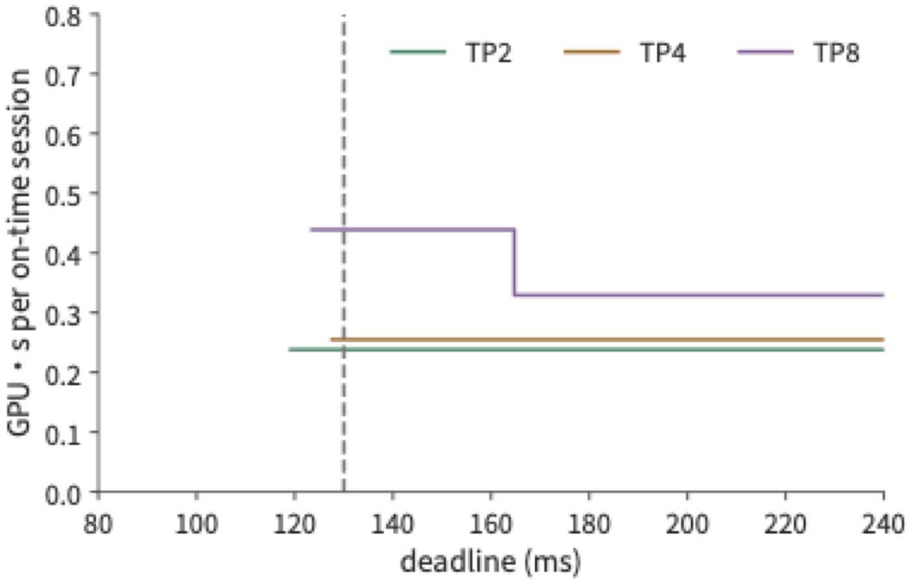
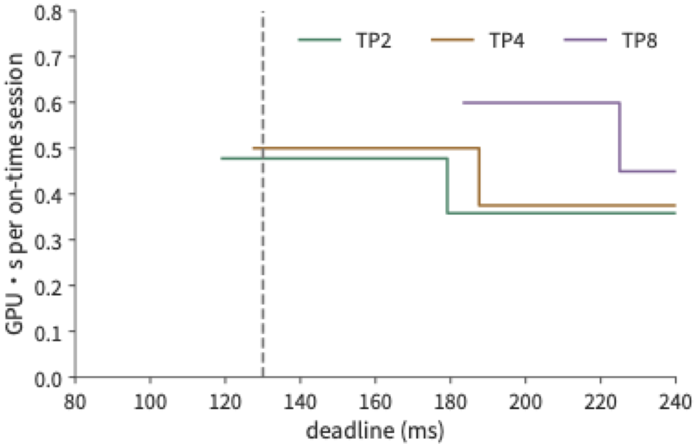
The scope of a failure's impact depends on whether instances share devices. If two instances share the same power supply or switch, both instances are affected when that shared device fails; splitting instances preserves the progress of other instances only if paired with resource isolation. The more devices an instance uses, the more devices request execution depends on functioning correctly. Therefore, sharing of power supplies and switches must also be considered when partitioning instances.
Power can also be used to compute the energy consumption of these deployment schemes. Using the DGX H100 system power cap of 10.2 kW from Section 6.5.2, without failures, the four two-card instances run for about 119.1 ms, consuming about 1.21 kJ; the two four-card instances run for about 127.6 ms, consuming about 1.30 kJ. With identical hardware and identical power, finishing the task earlier consumes less electrical energy.
The model's memory requirements constrain which deployment schemes are viable. In this example, TP1 is excluded first: the KV of a 128K session brings the per-card requirement to 102.03 GB. Shortening the context to 32K lets a single card hold one session, but the eight-step continuation takes 173.3 ms, still exceeding the 130 ms deadline — here TP1 is excluded by time rather than capacity. Identify the deployment schemes with sufficient memory capacity first, then compare execution time and cost among those schemes.24
Experiment 6-10 · Core: Choosing a parallelism configuration by session deadline and cost
(a) Starting from Equations (6-4) and (6-5), work out the eight-step continuation time for the four TP configurations, then compute the completion time of each of the four sessions.
(b) Using deadlines of 100, 130, and 170 ms respectively, requiring at least 75% of sessions to finish on time, find the deployment schemes that satisfy the requirement and compare their costs.
(c) Switch to TP16 across two HGX H100 servers, taking the measured cross-server AllReduce value from Experiment 7-3, recompute the single-session continuation time, and determine whether the 50 ms completion deadline can be met.
(d) Recompute session completion and cost after a failure; change the stall from 40 ms to 10 ms and explain how the deployment schemes that satisfy the requirement change.
(e) Change the context to 32K and add a power constraint, explaining which deployment scheme is excluded first by capacity, by time, and by power respectively.
6.7.3 Given a model and hardware, how to choose a partitioning strategy¶
Back to the question posed at the start of the chapter. Choosing a partitioning strategy can be written as an optimization problem with inputs and constraints: the candidate schemes \(\pi\) include parallelism degree, physical placement, communication algorithm, micro-batch partitioning, and local operator implementation. First fix an objective \(J\), then find
Every scheme in the feasible set \(\mathcal P_{\mathrm{feasible}}\) must satisfy per-card capacity, the data dependencies of the model partitioning, kernel support, and the service deadline. The objective \(J\) can be the latency of a single request, or the cost per on-time session from the previous section; if the objective is throughput, compare the sustainable request rate under the same service-level objective (SLO). Since the workload and objective are not fixed, there is no single answer to "the optimal parallelism degree."
Step one: record the model, workload, and resources. On the model side, you need the number of layers, matrix dimensions, attention heads and KV heads, the number of experts and the number selected per token, precision, shared weights, and cross-layer state. On the workload side, you need prefill length, decode context, the number of concurrently ready requests, routing distribution, target latency, and arrival process. On the hardware side, you need the available HBM per card, effective compute and bandwidth under different shapes, and the paths, startup overhead, and shared bottlenecks in each direction both within and between nodes. Chapter 4 gives hardware parameters, and Chapter 5 gives actual shapes and local execution times; the cluster's total bandwidth cannot simply be divided evenly across every communication group.
Step two: list candidate schemes by bottleneck rather than picking an abbreviation first. The table below lists which schemes to consider under each bottleneck; it is only meant to narrow the search space — the final choice still requires comparing completion times.
| Current constraint or bottleneck | Preferred schemes | Costs that must be computed additionally |
|---|---|---|
| Weights don't fit, or small-batch repeated weight reads are too slow | TP, PP; MoE can use EP | Reduction, stage serialization, expert traffic, and workspace |
| Many independent requests, complete model already fits | More DP/service replicas, smaller TP groups | Queueing, within-batch reuse, per-replica KV capacity |
| Activation of a specific range is stored redundantly | Enable SP within the same TP group | Gather and reduce at layout boundaries, kernel support |
| KV and attention dominate for long context | Combination of CP and TP | K, V exchange, statistics reduction, load imbalance from causal attention |
| Multi-layer weight capacity is large, cross-node reduction is expensive | Intra-node TP + cross-node PP | Whether micro-batches are sufficient, slowest stage, and pipeline bubbles |
| Expert set is large, routing hotspots are pronounced | EP, expert replicas, expert separation (routed experts placed in an independent expert resource pool) | Traffic in both dispatch and combine directions, the busiest card, and the queue of the expert pool |
Step three: write out data ownership and a timeline for each scheme. Mark, for each card, which layers, heads, experts, activations, and KV it holds; when computing peak memory, also add collective-communication buffers, double buffering, padding, in-flight micro-batches, and replica migration space. Then compute local computation and memory-access time for each operator, and the number of rounds, byte count, and shared path for each cross-card operation, and lay both out on a timeline according to their dependencies. Consecutive layers of the same token do not finish simultaneously just because of pipeline parallelism, and the expert results selected for the same token do not become ready earlier just because the network happens to be idle. MoE calculations should use the busiest expert group rather than the average; Section 9.4 gives a concrete skew (load imbalance) model.
Step four: rank the feasible schemes by the same objective. This chapter's eight-card example fixes the dense Qwen3-32B and a 128K session, with each instance handling only one session at a time; the first comparison is among TP1, TP2, TP4, and TP8, with the remaining cards forming independent instances. Expert parallelism doesn't apply to a dense model; sequence parallelism only changes the storage of one segment of activation, offering no additional benefit in this per-token, fixed-workspace example; if pipeline parallelism doesn't interleave multiple sessions, a single session still has to pass through all stages sequentially, so it isn't the first choice for shortening a single session's time. Context parallelism, cross-session pipelining, and continuous batching (rearranging active requests at the boundary of each iteration step) can enter an extended search, but they each require adding time models for context reduction, stage scheduling, and batch changes respectively, and cannot simply reuse tensor parallelism's \(1/p\) scaling.
The previous two sections already give per-session timelines and costs. Filtering by these complete values yields the choices below directly; changing the objective, physical boundaries, or capacity changes the choice accordingly.33
| Given conditions | Choice within constraints | Why |
|---|---|---|
| Four sessions, 128K, at least 75% must finish within 130 ms | Four TP2 instances | TP1 cannot fit; TP2 all finish at about 119.1 ms, each on-time session costing about 0.238 GPU·s, lower than TP4's 0.255 and TP8's 0.439 |
| Single session, 128K, 50 ms deadline | One TP8 instance | About 41.2 ms; TP4 is about 63.8 ms, already exceeding the deadline |
| Two HGX H100 servers, 16 cards total, single session, 128K, 50 ms | Still choose one TP8 instance | Cross-server TP16 takes about 53.3 ms by measured AllReduce, exceeding the deadline; the other server can run other instances |
| Four sessions, 32K, at least 75% must finish within 130 ms | Four TP2 instances | TP1 can fit, but the eight steps take 173.3 ms; TP2 all finish at about 88.3 ms, each on-time session costing about 0.177 GPU·s |
Step five: use measurements to correct estimates, not to treat the estimated ranking as conclusive. For the top-ranked schemes, run measurements under identical requests, routing, and quality conditions, recording peak memory, the readiness and completion time of each stage, the send/receive volume of each port, and the tail latency of the service. If actual matrix efficiency, communication contention, or queueing differs from the estimate, re-rank after substituting measured parameters; if the gap between two schemes is smaller than measurement variance, keep both and verify with a more representative workload. The final deliverable should include the chosen scheme, the excluded schemes, the thresholds that would flip the conclusion, and the measured range. The accompanying scripts can recompute the four sets of conditions in the table, but they only enumerate the schemes already stated — they are not a global planner covering arbitrary models and frameworks.
Different design choices affect different time costs. Changing TP mainly changes per-card computation, memory-access volume, and the number of cards participating in reduction; changing the algorithm mainly changes the number of rounds and the amount sent; changing topology mainly changes the shared path and fixed waiting; adding instances mainly changes the queueing order of independent sessions. Substituting these changes into the same execution time model lets you compare the performance of different designs.
For further optimization, sensitivity analysis can be applied to Equation (6-5). In the HGX H100 eight-card, small-data-volume example, doubling NVLink bandwidth saves only about 2.5 μs, while halving the per-round startup overhead saves about 0.74 ms; therefore, priority should go to reducing the per-round communication startup overhead. If MoE is limited by the most heavily loaded expert group, balanced dispatch directly reduces that group's computation; when reading remote KV, if bandwidth is limited by the number of in-flight transactions, increasing transaction concurrency is what's needed to fully utilize existing link bandwidth. This lets you determine which overhead to reduce first and which resource to add.
6.7.4 Supernode expansion and the placement of weights, the Engram table, and KV: a comprehensive example for V4.1 Flash¶
The previous three sections discussed how the eight cards within a single server are divided among several instances. This section instead changes the supernode itself: first examining what expanding the supernode buys, then fixing the weights into ROM following the approach of Section 4.7.3, and finally discussing where the Engram table and KV should be placed. The example still uses DeepSeek V4.1 Flash from Chapter 2, with the task being 200K-context decode. The hardware is 256 H100 SXM cards, with supernode sizes of 8, 64, 128, and 256 cards, and each inference instance occupying exactly one supernode. Within an instance, attention is placed via data parallelism, with each card handling and storing only the attention and KV of its own session; routed experts and the Engram table are split evenly across cards via expert parallelism, with one dispatch and one combine per layer.34
Supernode size and sessions per card. The weights on each card consist of two parts: attention, shared experts, and the output head each store one copy per card, totaling 9.5 GB; the routed experts' 288.8 GB and the Engram table's 203.1 GB are shared among the \(S\) cards within the instance. After subtracting weights and workspace \(U\), all remaining HBM is left for KV, with each session taking \(K=180.7\) MB, giving
Step time is still estimated using Equation (6-2): this card's weights and the KV of all sessions on this card are each read once, and reading and computation take the longer of the two, plus one dispatch and one combine per layer, totaling 80 All-to-Alls. The results for the four supernode sizes are shown in the table below.
| Supernode | Weight per card | Sessions per card | Step time | Throughput per card |
|---|---|---|---|---|
| 8 cards | 71.0 GB | 37 | 14.1 ms | 2,632 token/s |
| 64 cards | 17.2 GB | 335 | 17.3 ms | 19,420 token/s |
| 128 cards | 13.4 GB | 356 | 18.4 ms | 19,392 token/s |
| 256 cards | 11.5 GB | 367 | 18.9 ms | 19,378 token/s |
With only an 8-card supernode, each card stores 48 experts per layer, and almost all of them get selected within a single step, so reading expert weights takes up the vast majority of step time. Expanding to 64 cards reduces the experts allocated per card to one-eighth, cutting expert read time to less than one-tenth of its original value; the freed-up HBM can hold nine times as many sessions, so per-card throughput rises 7.4-fold. Expanding further beyond that yields no benefit: expert reading is already small, while KV reading, computation, and All-to-All all grow proportionally with the number of sessions. This 7.4-fold gain comes mainly from capacity. If the Engram table is moved to host memory, an 8-card supernode can also hold 178 sessions per card, narrowing the gap with the 64-card case to 1.9-fold.
The speed for a single user, however, is independent of supernode size. At batch size 1, the critical path for one token is the card reading its 8.2 GB of per-card-replicated weights once, then reading one expert per layer, totaling 2.76 ms, i.e., 362 token/s — identical for 8 cards and 256 cards. Expanding the supernode buys capacity and total throughput, not the speed of a single session; to shorten a single session's time, attention itself must also be made tensor-parallel, as in Section 6.7.1. Conversely, if the same 64 cards are spread across eight HGX H100 servers, seven-eighths of the dispatch and combine bytes must go over the NIC, and the communication time increases from 3.7 ms to 29.2 ms, dropping per-card throughput to 7,828 token/s. This is exactly the segment the supernode saves.
Fixing weights into ROM. Figure 6-54 shows three placements of weights and KV. A GPU puts both in HBM, re-reading the weights every step; the architecture from Section 4.7.3 writes the weights that don't change during deployment into masked ROM, leaving HBM to hold only KV; KV can further be placed in on-chip SRAM.
The latter two placements are calculated per OpenTallas's analysis of V4.1 Flash: two N5-process ROM wafers, still 200K context, batch size 1. Weights and KV each have their own path, so the two reads and the computation can overlap, but collective communication must wait until all three are done before it can start:
The 0.9 accounts for the fact that the number of layers assigned to the two wafers can never be perfectly balanced, and \(T_{\mathrm{fixed}}\) is the fixed pipeline latency per layer. In the GPU row, weights and KV share HBM, so the two read times are added together.
| Machine | Storage and compute | Collective communication | Single-user speed | Communication fraction |
|---|---|---|---|---|
| 8 H100 cards, weights in HBM | 2,689 μs | 76 μs | 362 token/s | 3% |
| 58 B200 cards, tensor parallel, weights in HBM | 165 μs | 562 μs | 1,357 token/s | 76% |
| Two ROM wafers, weights in ROM | 77 μs | 159 μs | 4,070 token/s | 65% |
Once weights leave HBM, weight reading shortens from 2.7 ms to 69 μs, but the 80 on-chip AllReduces still take 159 μs, making up 65% of the per-token time. Switching to 58 B200 cards with tensor parallelism, weight reading can also be compressed to 148 μs, but communication rises to 562 μs. Once weight reading is no longer the longest item, single-user speed is determined by collective communication — the method from Section 6.5.1 of estimating communication by hop count and per-hop latency becomes decisive here.
Where to place the Engram table. V4.1 Flash has two Engram modules, each with a table of 384 million rows, each row holding 256 FP8 values plus an 8-byte scale, totaling 203.1 GB for both tables. For each token generated, each module looks up 24 rows, totaling 12.7 KB. These tables are also weights, unchanged after deployment; which rows to look up depends only on the token sequence, not on activations, so it can be prefetched at the start of every step. As long as these rows are fetched back before the first Transformer block finishes computing, the lookup costs no time; the time available for fetching is 69 μs on an H100, and only 6.1 μs on the ROM wafer. Figure 6-56 shows three placements and their costs.
| Placement | Capacity occupied | Fetching 48 rows |
|---|---|---|
| Host memory, prefetched via PCIe or RDMA | Doesn't occupy HBM | One round trip, 1.05 μs |
| Sharded across the HBM of each card in the supernode | 8 cards: 25.4 GB per card, equivalent to 140 sessions; 64 cards: 3.2 GB per card, equivalent to 18 sessions | One round of NVLink exchange, 0.83 μs |
| Masked ROM | 21,651 mm², about half a wafer | On-die read |
On an H100, both fetch paths are far shorter than 69 μs, so the placement only needs to consider capacity. An 8-card supernode cannot fit this table; moving it to host memory increases sessions per card from 37 to 178. From 64 cards on, each card is allocated only 3.2 GB, so placing it in HBM reduces the session count by only 5%. For batch serving, host memory is not the bottleneck either: a 64-card instance performs 16,080 random reads per card per step, which at the measured 61 million reads per second from Section 7.3.4 takes only 0.26 ms — 1.5% of step time. DeepSeek's actual deployment places the table in host memory, prefetching via RDMA while the first Transformer block computes.
On the ROM wafer, the trade-off changes. The first block takes only 6.1 μs, and a single host round trip alone takes up one-sixth of that; once step time drops below 42 μs, it can no longer be hidden. Etching the table into ROM costs an extra half-wafer, in exchange for reading only 12.7 KB per token; placing it in the HBM at the wafer's edge occupies only the space of 1,124 sessions, and reading doesn't go through the interconnect at all. Once the table is moved out of ROM, a single wafer suffices for the checkpoint, and single-user speed actually rises to 5,037 token/s. The faster the machine, the closer to compute this table should be placed, in writable storage.
Putting KV in SRAM. On-chip SRAM is far faster than HBM, but capacity must be sufficient first. V4.1 Flash's checkpoint is 510.3 GB; even using the 44 GB of on-chip SRAM of a WSE-3 as in Section 4.7.2, weights alone would need 12 wafers, so placing weights in SRAM is excluded by capacity from the start. With weights in ROM, the remaining SRAM on the wafer only holds the KV of a single 200K session; moving KV to HBM instead lets the same two wafers hold 9,637 sessions simultaneously. The single-user speed of the two designs is identical, yet total throughput differs by three orders of magnitude. The speed of a single session is determined by the storage and communication on the critical path, while how many sessions can be served simultaneously is determined by the capacity of writable state — exactly the two layers of parallelism distinguished in Section 6.7.1.
All three steps use the same method: first check capacity per Equation (6-1), then estimate time item by item per Equation (6-2), and finally identify the longest item on the critical path. Expanding the supernode raises throughput, not the speed of a single session; once weights are fixed, the per-hop latency of the interconnect becomes the ceiling on single-user speed; a large read-only table like the Engram table should be placed closer to compute the faster the machine is; SRAM capacity determines how many sessions can be served simultaneously.
Experiment 6-11 · Extension: A comprehensive example of supernode, ROM, and SRAM
(a) Recompute the session counts in the table per Equation (6-14), changing the service target to 20 ms per token, and find the number of sessions each card can serve at each supernode size.
(b) Change attention within the instance to TP8, keeping everything else unchanged, and recompute single-user speed at batch size 1, comparing it to 362 token/s.
(c) Change the cross-server per-round startup overhead from 5 μs to 2 μs, and equip each card with two NICs, determining whether the 64-card cross-server instance can match the intra-supernode instance.
(d) Halve the on-chip per-hop latency, and recompute the single-user speed and communication fraction of the ROM wafer per Equation (6-15).
(e) Change the context to 1M, and recompute the number of sessions that can reside when KV is in SRAM, as well as the number of sessions when KV is in HBM.
(f) Change the host-memory round trip to 2 μs, and find at what single-user speed the Engram lookup begins to occupy step time, for both the H100 and the ROM wafer.
As weights, state, or service demand continues to grow, a single supernode may become insufficient to support the operation of one instance. The next chapter follows the data-transfer paths and dependencies analyzed in this chapter, adding NICs, the datacenter switching network, completion notifications for remote operations, and network congestion, to continue computing the benefits and costs of expanding the scope of collaboration.
Chapter Summary¶
Multi-card parallelism extends the tiling and scheduling of single-card operators. Splitting along samples, sequence positions, features, layers, and experts leaves each card holding different data and dependencies; data parallelism, tensor parallelism, sequence parallelism, context parallelism, pipeline parallelism, and expert parallelism are the common ways of organizing these splits. Splitting produces exchanges, scheduling determines when to initiate and when to converge, and the algorithm together with the physical path determines the cost. When choosing a scheme, first check the legality of capacity and execution, then compare schemes using latency, throughput, or cost under the full workload.
Parallelism benefits diminish with scale: the computation and memory access each card carries gradually decreases, but the time spent on serial processing remains, and reduction rounds and inter-server communication waits continue to consume time. Within-batch reuse, hotspot distribution, in-flight transactions, and physical cut sets each further change the data transfer speed and the execution time of the slowest stage. When analyzing these factors, starting from where data is produced, held, and next used lets us explain how each overhead affects subsequent computation. The UB example illustrates this: whether connection state adds by endpoint count or multiplies by endpoint pairs determines how many hosts the on-chip cache can accommodate and how long it takes to establish all connections; whether the controller sits on the on-chip bus or behind PCIe determines how many layers each access must traverse.
In this chapter's 128K continuation task, a single card cannot hold one session; the eight-card instance has the shortest single-session continuation time, while four two-card instances can complete all four sessions earlier overall. Failures, context length, and cross-server paths further change the available deployment schemes. Ultimately, supernode scale serves a clear task objective: providing sufficient memory capacity, completing requests within the deadline, and lowering the resource cost per request.
-
A single card's complete BF16 weights are 470,187,269,120 bytes, and the KV for 8192 tokens is 1,577,058,304 bytes; under eight-card TP, each card's weights are 58,959,617,024 bytes (including per-card copies of normalization parameters and the router), each card's KV is 394,264,576 bytes, and each card can hold at most 47 sessions of 8192-token KV. GB in the table is decimal, GiB/MiB are binary; totals are computed from exact values first and then approximated; the 2 GiB includes activations and the remaining workspace reservation. See Qwen3-235B-A22B eight-card placement and its JSON, which reads the fixed official configuration and weight index. Per-step read volume and computation are given in single-request 8K decode and 8192-token prefill. ↩
-
Parallelism estimates for specific models, Qwen3-235B-A22B configuration, DeepSeek V4 report, Kimi K3 report Table 1 and §2.3. DeepSeek-V3's 671B serves as a historical reference model. ↩↩
-
Eight formal configurations passed an FP64 reference check, with paired TP/SP outputs matching bit-for-bit; full shapes and acceptance criteria are in Experiment 6-2: JAX TP/SP actual FFN path. The experiment runs on CPU logical devices. ↩
-
MeshSlice matrix shapes and pipeline estimates, Shift Parallelism state and extra residency. MeshSlice's partial overlap is a prediction; Arctic's SP definition and dynamic switching boundary are described per the fixed implementation. ↩
-
Finite slots and backpressure calculation, Basic TP/PP communication path. ↩
-
Qwen235 ownership-linkage exercise and independent verification results. This example uses the TP2×EP4 layout given in the main text. ↩
-
Reading on expert reuse and MoE serving tax. Equation (6-8) assumes each token independently and uniformly selects experts; the original paper matches dense baseline models by activated FLOPs and total parameters respectively. ↩
-
See routing heatmap and accompanying figure description for graphics and sample details. The recording covers 43 layers, four actual decode inputs per question, including the EOS forward executed early by the scheduler. Source: DeepSeek V4-Flash routing observation and raw count analysis. ↩
-
Ring per-round results, unsegmented binomial-tree results, computed without contention. Bandwidth is the combined 450 GB/s per direction of the H100's 18 NVLink 4 links, see H100 architecture whitepaper page 47; per-round overhead is taken from C. Hwang et al., MSCCL++: Rethinking GPU Communication Abstractions for AI Inference, ASPLOS 2026, Tables 1 and 2: on a platform with 8 H100 cards per node, NVLink 4, and one 400 Gbit/s ConnectX-7 NIC per card, nvbandwidth measured NVLink latency of 822 ns and throughput of 397.5 GB/s, and RDMA perftest measured InfiniBand latency of 3.76 μs and throughput of 48.94 GB/s. ↩
-
Collective communication paths and diagnosis, covering fixed-framework source code, custom AllReduce dispatch, readiness skew, and measurement scope. ↩↩
-
AutoCCL uses 16/32 A40 cards with NCCL 2.18.3; eight-card NVLink forms four pairs of connections. Its direct search target remains communication performance; 18.26→32.44 GB/s is the AllGather measurement under recomputation interference from Table 6 of the paper. The AllGather/AlltoAll path with zero CTAs across networks in NCCL 2.31.2 involves symmetric registered windows, intra-node CE, and inter-node CPU proxies. See Communication tuning, compute contention, and offloading for details. ↩↩
-
Experiment 6-5: real communication and computation running in parallel across four processes. The experiment runs the CPU build of PyTorch on an M2 Max, with four processes communicating over local TCP. The formal measurement consists of five groups; within each group, communication alone, computation alone, and both running simultaneously are each run once, in random order within the group. Each entry in the table first takes the time of the slowest process within the group, then takes the median across the five groups. Communication time is measured from the submission of the asynchronous AllReduce to the host receiving the completion callback, which may be slightly later than when the data actually finishes transferring. ↩
-
Physical paths of collective communication and job staggering, physical path calculation for 96 messages, NSDI 2024 reading notes, Morphlux version and reading notes. TPU v4's OCS is based on MEMS mirrors, with switching times on the order of milliseconds; see TPU v4 paper §2. ↩↩
-
PCIe staging and NUMA placement, buffer calculation near the sender (this chapter uses only the byte counts from it). The CPU model for HGX H100 hosts is given in the DGX H100 user guide; the Xeon 8480C is a custom variant of the Xeon Platinum 8480+, which has up to 4 UPI links at 16 GT/s each, per the Intel product specifications and 4th Gen Xeon technical overview, Table 1. Intel has not published the per-direction GB/s figure for UPI, so no transfer time is converted here; PCIe Gen5 x16 at 64 GB/s per direction is given in the H100 architecture white paper, page 48. ↩
-
Port count and interconnect medium analysis. The port and power worked example uses the inputs given in the problem statement. ↩
-
ASHRAE TC 9.9, Emergence and Expansion of Liquid Cooling in Mainstream Data Centers, 2021, pages 14 and 28: the white paper does not give a single air-cooling ceiling; 40 kW is the threshold chosen for this example by comparing airflow figures. The example rack layout on page 10 of the DGX SuperPOD H100 reference architecture exceeds 40 kW per rack. The per-server power ceiling is given in the
rackfield of the Chapter 6 computed results. ↩ -
V100 architecture white paper, NVLink topology and DGX-1 appendix; A100 architecture white paper, NVLink/NVSwitch and DGX A100 appendix; the historical 16-card configuration of DGX-2 is also described in the platform notes of the ZeRO paper. ↩
-
The design case's 6 ports per chip, 50 GB/s per port per direction, is taken from TPU v4: Google TPU generations survey Table 1 lists TPU v4 as having 6 ICI links per chip at 50 GB/s each, with footnote 4 noting this is per direction (TPU v5p and Ironwood are 100 GB/s per link); TPU v4 paper Table 4 likewise gives 6 links at 50 GB/s. The 200 ns per hop is the no-load latency target that the UALink 2.0 specification §9.9.2 sets for a 128-lane switch chip, applied here as well to the router within a torus chip. 32 MiB is the per-card send volume given in the problem statement; the link load for uniform all-to-all traffic is computed from the average hop count under dimension-order routing. The remaining system data come from TPU v4 paper §2 (optical link cost, OCS share, 3D torus cut sets), the official NVLink specification (18 links per GPU, non-blocking at 72 GPUs), and CloudMatrix384 paper v2 §3.3.2–3.3.3 (first- and second-tier switch chip counts and non-blocking design). ↩
-
GB200 NVL72 official archive, a fixed snapshot of the 72-GPU/36-CPU and rack-level NVLink organization; the NVLink Switch System connects up to 256 H100s, per the H100 architecture white paper, page 48. The time for a 16-card ring reduction is given in the
two_servers.nvlink_domain_tp16field of the Chapter 6 computed results. ↩ -
TPU v4 paper, TPU generations system survey, for the design of electrical interconnect cubes, OCS, slicing, and failure isolation. ↩
-
UB and Ascend 950 material cross-check, UB OS reference design §4, 950 official white paper §4.6. ↩↩↩
-
CloudMatrix384 paper v2 §3.2, Figure 2, Table 1; some NPU measurements in the paper's tables are per die, while the system-level 384 figure is per NPU. ↩
-
The
memory_poolfield of the Chapter 6 memory pool computation: occupancy before and after borrowing across four 80 GB nodes, window bandwidth \(uq/L\), and the comparison between read time and repeated reads. Path bandwidth is taken as ConnectX-7's 400 Gbit/s; round-trip time is taken as twice the InfiniBand one-way latency of 3.76 μs from MSCCL++ Table 1; local bandwidth is taken as H100's 3350 GB/s. ↩ -
The
candidatesandcandidates_32kfields of Per-session timelines, failures, and GPU·s, generated by the computation script; the screening of the four deployment conditions is given in Partitioning choice results. Energy consumption is computed at the DGX H100 system power ceiling of 10.2 kW, per the Chapter 6 computed results. ↩ -
The running model and step-by-step computation are given in the model description, computation script, and complete results. The Qwen3-32B shape is taken from the locked configuration; H100's HBM capacity, bandwidth, and matrix peak throughput are taken from the hardware table. The time for matrix operators is taken as the larger of memory access time and compute time, both computed at peak; communication is serialized by layer, and the context KV grows every step. ↩
-
DeepSeek V4.1 official technical report, Sections 1, 2, 3, and 6; fixed conditions and recomputation across chapters. ↩
-
Li Bojie, "Reflections behind Unified Bus," sections on Jetty, transaction ordering, and load/store; OpenURMA paper, revised 2026-06-02 (arXiv:2605.28717), §3 design, §7–§9 states and latency, §11 full-system verification, §13 result summary. Sources and scope of this integration. ↩
-
The parameters and results for host count and connection-establishment time are given in UB interconnect computation; running
python3 calculations/calc.py ub-fabric --format mdrecomputes them. Record size, stage latency, and cache entry count are taken from the OpenURMA paper Tables 3 and 7 and §7.2. The directory-based cache-coherent interconnect is computed using the formula of reserving 1 bit per cache line per peer; NVL72's 72 GPUs are the publicly disclosed configuration for that generation of product, not a result derived in this book. ↩ -
NVIDIA technical blog Improving Network Performance of HPC Systems Using NVIDIA Magnum IO NVSHMEM and GPUDirect Async (steps for the two paths of CPU proxy threads versus GPU-initiated); NVIDIA DOCA DPA documentation (the programming model for offloading communication code onto the processor inside a BlueField-3 NIC); DeepEP README snapshot. The traversal counts for the three locations are each computed from their respective control paths; specific implementations may merge or add steps. See the source record for the captured snapshot. ↩
-
NVIDIA, NCCL collective communication semantics, point-to-point and unequal-length exchange, nccl-tests bandwidth convention; see the source record for reading snapshots and hashes. ↩↩↩
-
Korthikanti et al., Reducing Activation Recomputation in Large Transformer Models, §3 on tensor and sequence parallelism; Megatron Core's Context Parallelism documentation; Liu et al., Ring Attention with Blockwise Transformers for Near-Infinite Context. This section's use of SP follows Megatron's specific meaning; the eight-position example for CP is derived in this book. ↩↩
-
Huawei chief semiconductor scientist Heng Liao, Nested Parallel von Neumann Architecture and Nested BSP, arXiv:2609.16787, submitted 2026-09-15. Section 2 and Figure 1 describe recursive software nesting; Chapter 10 discusses FSDP and SP separately. ↩
-
Partitioning choice inputs, scheme-screening script, complete results. Using this chapter's execution time model, KV capacity is computed from the peak context of all queued sessions within an instance; ordering is applied only within the explicitly stated combinations of TP and instance count. ↩
-
Fixed scenario, computation script, and complete results. Weights are summed tensor by tensor from the sharded headers of the locked V4.1 Flash checkpoint; KV and matrix-operation FLOPs are computed by
kv-comparisonandv41-forwardrespectively at a 200,000 context length; H100 parameters are taken from the hardware table; the per-round startup overhead for NVLink and NICs matches Sections 7.6.3 and 7.6.4. The rows on ROM wafers and 58 B200 cards are taken from the author's roofline analysis of DeepSeek-V4.1-Flash in the OpenTallas repository, commit c7093ba; the analysis points used are saved in the excerpt. These are equal-die-area analytical results: OpenTallas has no fabricated chip yet, and its ROM density and read bandwidth on the N5 process have not been measured either. The row count of the Engram table, bytes per row, and the number of lookup rows for the two modules are taken from the same checkpoint and configuration; DeepSeek's deployment places the table in host memory and prefetches it via RDMA, per V4.1 technical report §2.4.2 and §3.1.3; the single host-memory round trip and the read rate limited by in-flight tags are taken from the KV-Direct measurements in Section 7.3.4. The ROM area is converted using OpenTallas's N5 mask-ROM density; the single-wafer design after moving the table out of ROM is taken from the engram-host analysis in the same commit. WSE-3's 44 GB of on-chip SRAM is described in Section 4.7.2. ↩ -
HGX H100 datasheet: eight GPUs interconnected via NVSwitch, 900 GB/s NVLink between GPUs, network rate up to 400 Gbit/s; NVIDIA H100 specifications list H100 SXM's 80 GB, 3.35 TB/s, 900 GB/s NVLink, and 128 GB/s PCIe Gen5, the latter two being combined totals across both directions; H100 architecture white paper, page 47: 18 fourth-generation NVLinks, each at 25 GB/s per direction; ConnectX-7 datasheet: up to 400 Gbit/s per port; DGX H100 user guide: 8 H100s, 640 GB of GPU memory. The configuration of one 400 Gbit/s NIC per card is also given in the public run log for Experiment 7-3. HBM bandwidth and 989.4 TFLOP/s are taken from the
h100-sxmrow of the hardware table. ↩ -
Qwen3 technical report, Table 1, lists Qwen3-32B as having 64 layers, 64/8 query/KV heads, and a 128K context; §3.2 states that pretraining sequence length is 32,768, and at inference time YaRN and DCA are used to extend the manageable sequence length to four times that. ↩
-
Qwen3-32B batch 1 and batch 64, Qwen3-30B-A3B batch 1 and batch 64 with balanced routing, Qwen3.6-35B-A3B batch 1 and batch 64, Qwen3.6's 128K state and 256K state. The number of requests that fit is computed as \(\lfloor(n\times(80\ \mathrm{GB}-2\ \mathrm{GiB})-W)/S\rfloor\), where \(n\) is the card count, \(W\) is resident weights, and \(S\) is per-request state; the summary is given in the
dense_moefield of the Chapter 6 computed results. Qwen3.6's state reads include the KV of full attention layers, the recurrent state of linear attention layers, and the convolution state. ↩ -
H100 architecture white paper, pages 47–48: each third-generation NVSwitch provides 64 fourth-generation NVLink ports, each NVLink at 25 GB/s per direction; the NVLink Switch System, at each node, exposes all of that node's internal NVLink bandwidth at 2:1 convergence. ↩
-
DGX H100 user guide, Table 3: system power 10.2 kW max; the 700 W figure for H100 SXM is given in the hardware table. The per-server power ceiling is given in the
rackfield of the Chapter 6 computed results. ↩